DO NOT BORDER YOURSELF THE BRIGHT ONE, THERE ARE SO MANY REASON YOU NEED TO STUDY GRAPHICS DESIGN.
Introduction to Graphics Design (Origins & Evolution)
Graphics design as a discipline emerged in the late 19th to early 20th century, coinciding with the Industrial Revolution and the development of modern printing technologies. The term "graphic design" was first coined in 1922 by William Addison Dwiggins.
graphic design, the art and profession of selecting and arranging visual elements—such as typography, images, symbols, and colours—to convey a message to an audience. Sometimes graphic design is called “visual communications,” a term that emphasizes its function of giving form—e.g., the design of a book, advertisement, logo, or Web site—to information. An important part of the designer’s task is to combine visual and verbal elements into an ordered and effective whole. Graphic design is therefore a collaborative discipline: writers produce words and photographers and illustrators create images that the designer incorporates into a complete visual communication.
the evolution of graphic design as a practice and profession has been closely bound to technological innovations, societal needs, and the visual imagination of practitioners. Graphic design has been practiced in various forms throughout history; indeed, strong examples of graphic design date back to manuscripts in ancient China, Egypt, and Greece. As printing and book production developed in the 15th century, advances in graphic design developed alongside it over subsequent centuries, with compositors or typesetters often designing pages as they set the type.

Graphic design has been practiced in various forms throughout history; indeed, strong examples of graphic design date back to manuscripts in ancient China, Egypt, and Greece.

The profession expanded enormously, and graphic designers created, among other things, magazine pages, book jackets, posters, compact-disc covers, postage stamps, packaging, trademarks, signs, advertisements, kinetic titles for television programs and motion pictures, and Web sites.
Historical Background: Ancient Civilizations (Egyptian hieroglyphics, Chinese calligraphy)
Graphics design, as a visual communication discipline, has ancient roots that extend back thousands of years to the earliest civilizations. Before the modern concept of graphic design emerged in the 20th century, ancient cultures developed sophisticated visual systems to communicate ideas, preserve knowledge, and express artistic vision. Two of the most significant early developments were Egyptian hieroglyphics and Chinese calligraphy, which fundamentally shaped how humans think about visual communication.
Egyptian Hieroglyphics (c. 3200 BCE)
Egyptian hieroglyphics represent one of the earliest and most revolutionary visual communication systems in human history. These sacred carvings, known as "hieroglyphics" (Greek for "sacred engravings"), emerged around 3200 BCE and served as the primary writing system of ancient Egypt for over 3,000 years. Far more than simple writing, hieroglyphics were a sophisticated blend of art and communication that embodied the principles of modern graphic design.
Visual-Phonetic Hybrid System:
The hieroglyphic system employed approximately 700-800 distinct signs during the Old Kingdom period, evolving to over 5,000 variants by the Ptolemaic era. Determinatives—unpronounced signs that clarified word meaning—were placed at the end of words to indicate semantic categories such as divinity, royalty, or action. The reed leaf symbol represented the single consonant 'j' or 'i', while the vulture represented 'a', demonstrating how natural forms were abstracted into phonetic components. Biliteral signs represented two consonants simultaneously, reducing the number of glyphs needed for common syllables. Triliteral signs compressed three consonants into single elegant symbols, streamlining the writing of complex words. The system allowed for multiple spellings of the same word, with scribes selecting variants based on aesthetic considerations and available space. Color coding enhanced phonetic clarity, with certain signs consistently rendered in red or black ink to distinguish phonetic values. The cartouche—a royal name enclosure—combined phonetic spelling with protective symbolism, demonstrating functional integration of writing and magic. Scribal training emphasized memorization of sign groups that appeared frequently in religious and administrative texts. The flexibility of the system enabled it to adapt to foreign words during Egypt's imperial periods, incorporating Semitic and Greek terms. Phonetic complementation used additional signs to reinforce pronunciation without changing meaning. The ankh sign, while primarily meaning "life," could also function phonetically in certain contexts. Hieratic and Demotic scripts evolved as cursive simplifications of hieroglyphic phonetic principles for rapid writing. The Rosetta Stone's trilingual inscription ultimately provided the key to deciphering this complex phonetic architecture. Modern Unicode encoding has digitized over 1,000 hieroglyphic signs, preserving this ancient phonetic legacy for contemporary scholarship.

Hieroglyphics combined logograms (symbols representing entire words or concepts) with phonetic elements (symbols representing sounds).

Egyptian scribes developed strict rules for how hieroglyphics should be drawn, maintaining consistent proportions, sizes, and positioning.

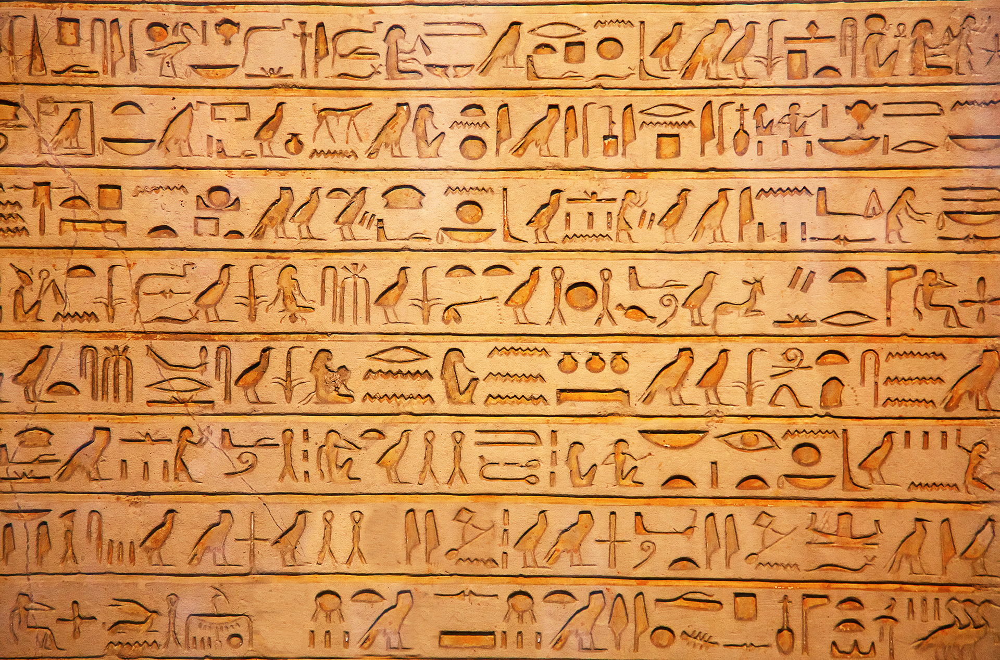
Egyptian hieroglyphics blend art and communication, serving as both sacred religious text and sophisticated visual design system.
Chinese Calligraphy (c. 1200 BCE - Present)
While Egyptian hieroglyphics were primarily utilized for religious and administrative purposes, Chinese calligraphy evolved into a supreme art form that has been practiced continuously for over 3,000 years. Emerging around 1200 BCE during the Shang Dynasty, Chinese calligraphy represents perhaps the most direct ancestor to modern graphic design principles, emphasizing aesthetics, meaningful form, and the relationship between content and presentation.
Character-Based Visual System: The Kangxi Dictionary, completed in 1716, classified 47,035 characters by 214 radicals, establishing the most comprehensive organizational system. Each character occupies an imaginary square space, creating the "square character" (fangkuai) principle that governs composition. The eight fundamental strokes (yongzi bafa) demonstrated in the character "yong" (eternity) provide the technical foundation for all writing. Stroke order follows strict rules: top before bottom, left before right, horizontal before vertical, and center before sides. Traditional characters maintain more complex forms than simplified variants, preserving historical etymological information. The six categories of Chinese characters (liushu) include pictographs, ideographs, compound ideographs, phonetic-semantic compounds, loan characters, and borrowed characters. Seal script characters often retain pictographic origins visible in their curved, ancient forms. The 3,500 most frequently used characters cover 99% of modern written communication, while scholars may master 10,000 or more. Character etymology traces semantic evolution from oracle bone inscriptions through bronze vessel scripts to modern forms. Regional variants developed in Japan (kanji), Korea (hanja), and Vietnam (chữ nôm), adapting the system to different linguistic structures. Digital fonts must accommodate the complex stroke interactions and spatial balance of thousands of distinct characters. Character recognition software relies on stroke sequence and structural components rather than overall shape matching. The "center of gravity" principle ensures that characters appear stable despite varying stroke densities. Calligraphic analysis can identify individual writers through characteristic stroke pressure and terminal embellishments. Unicode standardization has assigned code points to over 100,000 CJK (Chinese-Japanese-Korean) unified ideographs.
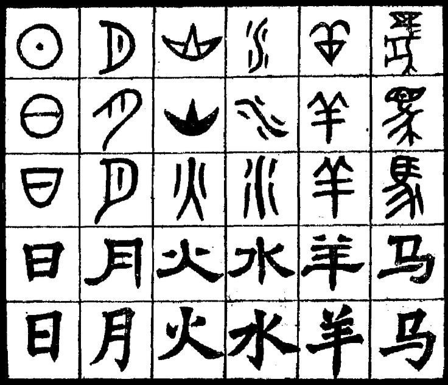
Egyptian hieroglyphics blend art and communication, serving as both sacred religious text and sophisticated visual design system.
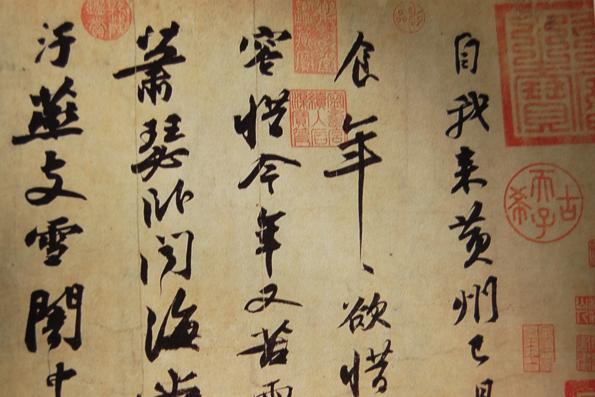
Chinese calligraphy represents the highest art form in Chinese culture, where each stroke carries meaning beyond its literal representation.
Legacy and Impact on Modern Graphics Design
Both Egyptian hieroglyphics and Chinese calligraphy established foundational principles that modern graphic designers still use today:
1. Symbolism and Visual Communication: They proved that visual forms can communicate complex ideas without spoken language, establishing the fundamental principle that drives graphic design.
The ankh symbol conveyed life and immortality across millennia while Chinese characters encapsulated entire philosophical concepts in single forms. Pictographic elements in both systems demonstrate that imagery precedes and supports textual understanding in human cognition. Modern icon design and wayfinding systems directly inherit this principle of universal visual communication. Corporate logos function as contemporary hieroglyphs identifying organizations without verbal explanation. Emoji and digital sticker systems represent the latest evolution of pictographic communication in global messaging. The success of international symbols at Olympics and airports validates ancient approaches to transcending language barriers. Visual identity systems rely on consistent symbolic vocabularies that function like ancient script conventions. Information graphics and data visualization continue the tradition of making abstract concepts visible and comprehensible. Universal design principles mandate visual communication accessibility regardless of linguistic background. Brand marks must function across cultural contexts just as ancient symbols served diverse populations. The neuroscience of visual processing confirms that symbols activate meaning faster than text recognition.
2. Typography and Letterform Design: Both systems demonstrate that the form of text is as important as its content. Modern typeface design carries forward the sophisticated attention to proportion, balance, and aesthetic quality pioneered in these ancient systems.
The geometric construction of Egyptian hieroglyphs established principles of modular letterform design still used in digital font creation. Chinese stroke order and structure inform contemporary approaches to character construction in CJK typefaces. The contrast between thick and thin strokes in calligraphy prefigures the stress variations in modern serif typefaces. Proportional systems in ancient scripts established the mathematical relationships that govern type metrics today. The negative space within and between characters remains a primary consideration in font design and kerning. The evolution from handwriting to standardized forms parallels the development of typographic families from roman to italic. The tension between legibility and expression in calligraphy directly informs contemporary debates about display versus text typefaces. The concept of type "color"—overall density of text—derives from ancient understanding of ink distribution. The standardization of character sets in ancient Egypt prefigures Unicode and digital font encoding systems. The revival of historical typefaces in the nineteenth century explicitly referenced ancient epigraphic models. Variable font technology now allows continuous variation within type families similar to calligraphic stroke modulation. The global type market requires designers to understand diverse writing systems beyond Latin scripts.
3. Consistency and Standards: The development of standardized forms shows the importance of systematic design—a principle embodied in modern design systems, style guides, and brand standards.
Egyptian canon of proportions governed figure drawing across three millennia, demonstrating the longevity of well-designed systems. Chinese character standardization under the First Emperor established government-imposed design consistency for administrative efficiency. The persistence of scribal training methods ensured transmission of standards across generations without written manuals. Medieval scriptoria maintained house styles that prefigure contemporary brand guidelines and design systems. The evolution of both systems shows how standards accommodate necessary variation while maintaining recognizability. The QWERTY keyboard layout and ASCII encoding represent modern equivalents of ancient standardization decisions with lasting impact. Style guides for corporations and publications enforce consistency across multiple authors and production contexts. Design systems for digital products provide component libraries that function like ancient sign repertoires. Grid systems in layout derive from the geometric organization of ancient inscriptional fields. The tension between standardization and creativity remains a central dynamic in design practice and education. International standards for symbols, colors, and measurements enable global commerce and communication. The maintenance of standards requires institutional support whether royal, religious, or corporate in nature.
4. Hierarchy and Composition: Ancient designers understood how to arrange visual elements to guide viewer attention and organize information—skills central to modern layout and information design.
The scale variation of Egyptian hieroglyphs—larger for divine names—established principles of typographic hierarchy still used today. The organization of Chinese calligraphy in vertical columns with specific spacing conventions informs contemporary grid systems. The integration of text and image in both ancient systems prefigures modern layout approaches to mixed media. The use of color for emphasis and categorization in ancient scripts established conventions for information graphics. The directional flow of reading in both cultures required careful consideration of entry points and progression. The framing and marginal treatment of ancient inscriptions established conventions for page layout and border design. The relationship between figure and ground in hieroglyphic composition parallels figure-ground relationships in modern graphic design. The alignment and distribution of elements in ancient works demonstrate sophisticated understanding of visual weight and balance. The use of registers and bands in Egyptian art established horizontal organization systems for information. The integration of seals and signatures in Chinese works prefigures modern approaches to authentication and branding. The adaptation of compositions to architectural contexts in both cultures informs environmental graphic design. The layering of information in complex ancient inscriptions demonstrates strategies for handling information density.
5. Material and Technical Innovation: Both cultures explored how different materials (stone, papyrus, pigments, brushes) could enhance visual communication, paralleling modern designers' exploration of digital and physical media.
Egyptian experiments with different stone types for inscriptions established principles of material selection for durability and aesthetics. Chinese development of paper from silk and bamboo revolutionized information storage and transmission. The preparation of animal skins for parchment and vellum in both cultures optimized surfaces for specific writing instruments. The grinding and mixing of mineral pigments established color chemistry principles still relevant to ink and paint manufacturing. The carving of seals in jade, stone, and metal extended calligraphic principles to three-dimensional materials and negative space. The development of brushes from animal hair and bamboo established tool design principles for specific mark-making effects. The invention of inksticks and grinding stones allowed portable, reconstitutable writing materials for travelers. The firing of clay for ostraca and tablets provided durable, lightweight alternatives to stone inscriptions. The weaving of silk for painting and calligraphy established textile-based information technologies. The casting of bronze for vessels with inscriptions combined metalworking with textual commemoration. Modern digital interfaces continue this exploration of how medium shapes message and user experience. The current revival of letterpress and traditional techniques represents nostalgia for material authenticity in digital culture.
6. Artistic Expression Within Functional Communication: Perhaps most importantly, these ancient systems show that visual communication can be both functional (conveying meaning) and beautiful (expressing artistic vision)—a balance that remains the essence of effective graphic design.
The aesthetic refinement of Egyptian hieroglyphs served religious and political functions while demonstrating individual scribal skill. Chinese calligraphic excellence was valued as personal cultivation and social accomplishment beyond mere communication. The decoration of functional objects with inscriptions established the principle that utility need not exclude beauty. The competition among scribes and calligraphers for excellence drove innovation within traditional constraints. The appreciation of ancient examples as models for study established the concept of design history and canon formation. The valuation of calligraphy as collectible art created markets for graphic works independent of their original function. The integration of poetry and visual art in Chinese tradition demonstrated that design serves cultural refinement. The ritual and ceremonial contexts of ancient inscriptions established that communication participates in larger social and spiritual systems. The personalization of standardized forms allowed individual expression within collective conventions. The survival of ancient works as aesthetic objects beyond their original functional contexts demonstrates design's lasting value. The contemporary notion of "design thinking" balances practical problem-solving with creative innovation following ancient precedent. The definition of graphic design as a profession rather than mere trade depends on this integration of utility and artistry.
Medieval Period: Manuscript Illumination & Typography
The Middle Ages saw two parallel developments that would shape the look and feel of visual communication for centuries: the hand‑crafted art of manuscript illumination and the mechanical birth of movable‑type typography. Below we explore each in depth, outlining their origins, techniques and lasting influence.
The medieval period spans roughly one thousand years from the fall of Rome to the Renaissance, encompassing diverse regional and temporal variations. Monastic institutions preserved and transmitted classical knowledge while developing distinctive visual traditions. The collapse of centralized Roman authority led to localized artistic developments across European kingdoms. The Christian church provided the primary patronage for sophisticated visual communication throughout this period. The rise of universities in the twelfth century created new demands for textbooks and scholarly apparatus. The Crusades and increased trade brought Eastern influences to European art and design. The Black Death in the fourteenth century disrupted but did not destroy manuscript production traditions. The invention of eyeglasses in the late medieval period suggests increasing literacy and demand for reading materials. The development of paper manufacturing in Europe reduced dependence on expensive animal skins. The transition from monastic to commercial production in the later medieval period prefigured modern design industry structures. The Gothic style that dominated later medieval art established aesthetic principles still referenced in contemporary design. The medieval synthesis of text and image established precedents for multimedia communication.
Manuscript Illumination
Origins & Context:
Illumination began in late antiquity when monks decorated biblical and liturgical texts with colour and gold. The technique flourished in medieval scriptoria across Europe, turning books into objects of devotion and prestige.
The earliest illuminated manuscripts emerged from the scriptoria of Irish monasteries, isolated from continental artistic traditions and developing unique insular styles. The Book of Durrow (c. 650-700 CE) represents the earliest surviving fully decorated insular gospel book. Mediterranean traditions influenced Italian and Spanish illumination through Byzantine connections maintained after the fall of Rome. Carolingian reforms under Charlemagne (800-814 CE) standardized script and decoration across the Frankish empire for administrative and cultural unity. Ottonian illumination (c. 950-1050 CE) developed massive, monumental figures reflecting imperial ambitions and religious grandeur. Romanesque illumination (1000-1200 CE) featured thick, rounded forms and extensive use of gold backgrounds for divine radiance. Gothic illumination (1200-1500 CE) introduced naturalistic detail and architectural frameworks for narrative complexity. The rise of universities created demand for textbooks with decorated initials and marginal diagrams for scholarly study. Mendicant orders (Franciscans and Dominicans) produced portable books with simplified decoration for preaching and travel. Court patronage shifted production from monasteries to urban workshops by the late medieval period for secular luxury. The "ducal" style of Burgundy and Flanders set standards for luxury book production across European courts. Women participated as illuminators in convents and, increasingly, in commercial workshops for economic opportunity.
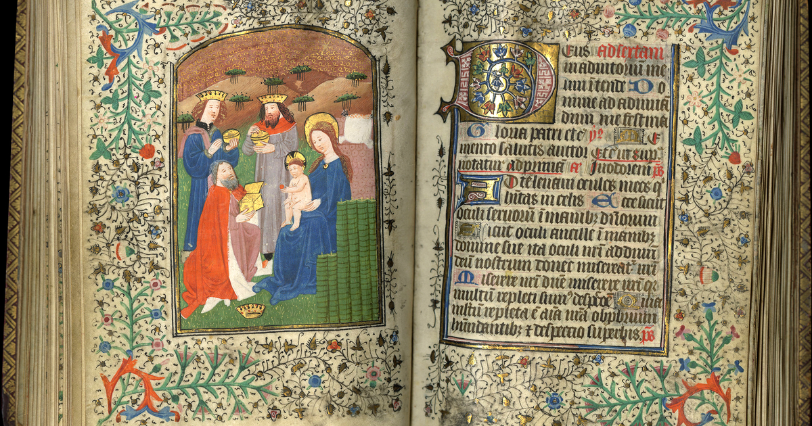
Early illuminators worked in monastery workshops, merging spiritual purpose with decorative skill.
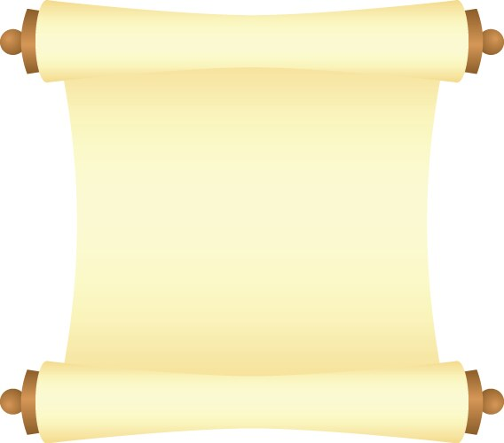
The shimmer of burnished gold and lapis blue became the hallmark of luxurious manuscripts.

Each page became a stage where theology, geometry and colour danced together.
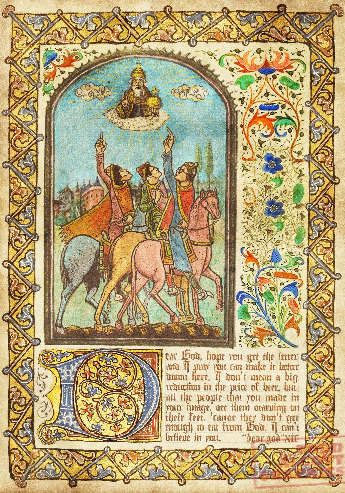
More than decoration, the pictures carried moral lessons and reflected the patron’s status.
Typography
From Script to Print:
In manuscript culture, scribes copied each page by hand. The quest for faster reproduction led to Gutenberg’s movable metal type in the 1450s, a watershed that shifted text from one‑off craft to repeatable product.
Woodblock printing developed in East Asia centuries before European movable type, using carved page-blocks rather than individual characters. Korean metal movable type preceded Gutenberg by several decades using cast bronze characters for efficiency. Gutenberg's innovation combined existing technologies: the wine press, oil-based inks, and metal casting techniques for mechanical reproduction. The "Gutenberg Bible" (c. 1455) printed approximately 180 copies, with 48 surviving today as rare treasures. Gutenberg's type featured 290 distinct characters to replicate scribal abbreviations and ligatures for authenticity. The "exemplar" theory suggests printed books were designed to match specific manuscript models for continuity. "Incunabula" (books printed before 1501) number approximately 30,000 editions surviving today for scholarly study. The "type area" (print space) of early books maintained manuscript proportions and margin ratios for familiarity. "White vine" initials in early printed books continued hand-painted decoration traditions for luxury editions. "Rubrication"—red heading and initial strokes—was often added by hand after printing for emphasis. The "Incunable period" saw rapid technological refinement and geographic spread of printing across Europe. Venice emerged as the leading center of printing by 1500, with over 150 presses operating for international trade. Nicolas Jenson's roman type (1470) established standards for readability and classical proportion that persist today. Aldus Manutius pioneered italic type, pocket editions, and standardized punctuation for scholarly efficiency. The "chase," "furniture," and "quoins" of the handpress imposed new spatial constraints on page design for technical requirements.
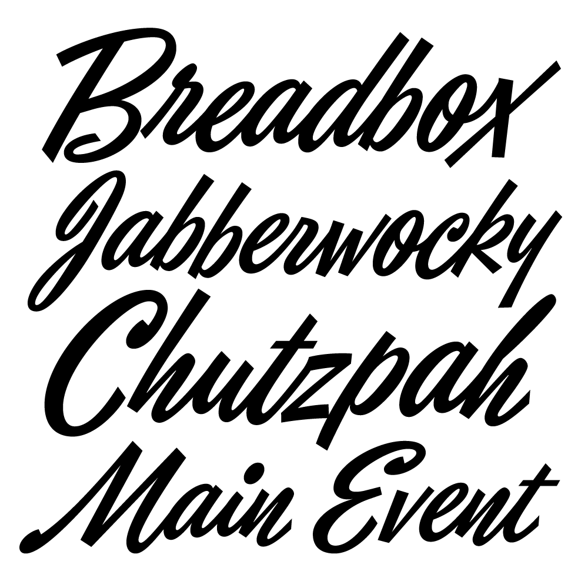
The first printed books deliberately mimicked manuscript layout to ease the transition for readers.
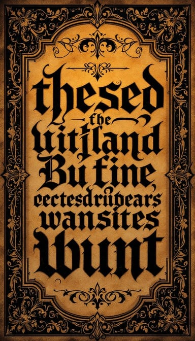
Letterforms carried the personality of scribes even after they were cast in lead.
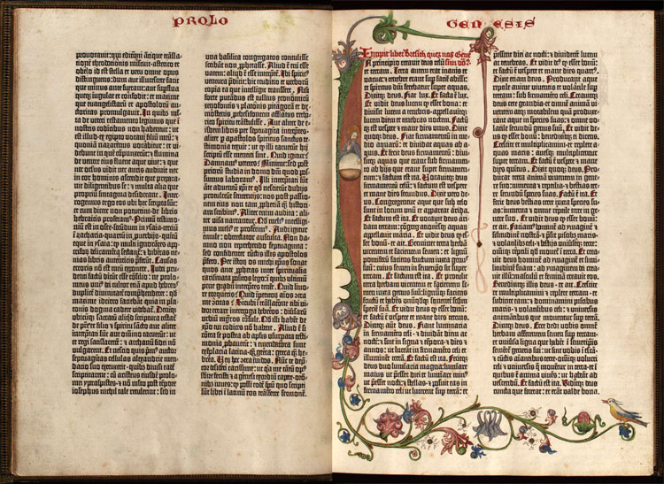
The press turned text into a commodity and launched the information age.
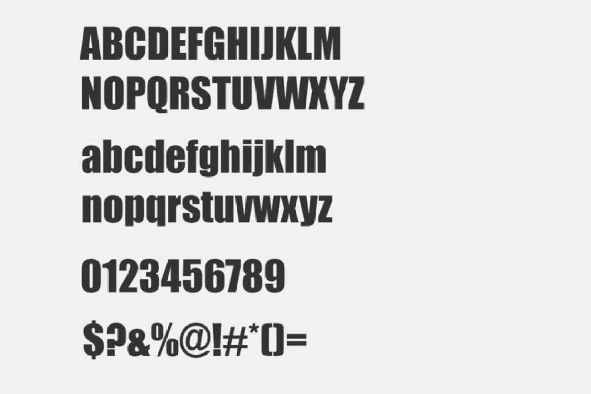
Movable type transformed graphic design from the personal gesture of a scribe to a reproducible system.
Renaissance (14th–17th Century): Development of Perspective and Composition Principles
The Renaissance emerged from medieval times as a rebirth of classical learning and humanism. In visual arts and graphic design, this period witnessed revolutionary breakthroughs in how space, form and composition were understood and depicted. The development of linear perspective, atmospheric perspective, and new compositional rules fundamentally transformed graphic design, illustration and all visual communication.
The Renaissance period spans roughly three centuries from the trecento in Italy to the Baroque transition, encompassing diverse regional schools and stylistic variations. The rediscovery of classical Greek and Roman texts provided theoretical foundations for visual arts and architecture. The patronage system of Italian city-states and papal courts funded artistic innovation and competition. The development of oil painting techniques allowed greater realism and color range than tempera mediums. The rise of print culture disseminated artistic innovations across Europe faster than manuscript transmission. The Reformation and Counter-Reformation shaped religious art and propaganda uses of visual communication. The scientific revolution paralleled and informed artistic investigations of optics and anatomy. The establishment of art academies formalized training and theoretical discourse for professional development. The colonial expansion brought new subject matter and cultural influences to European art. The development of specialized genres—landscape, still life, portraiture—expanded the scope of visual communication. The concept of the individual artist as creative genius emerged, replacing the medieval artisan model. The theoretical writings of Alberti, Leonardo, and Dürer established art as an intellectual discipline.
Linear Perspective: The Foundation of Spatial Representation
Historical Development:
Linear perspective emerged in early 15th-century Italy, most notably through the work of architect and theorist Filippo Brunelleschi. His famous 1413 demonstration using a mirror reflection revealed that parallel lines converge to a vanishing point—a principle that would revolutionize painting, drawing and graphic composition.
Brunelleschi's 1415 demonstration used a painted panel of the Florence Baptistery viewed through a peephole and mirror for empirical proof. Leon Battista Alberti's "De pictura" (1435) provided the first written theoretical exposition of perspective construction for systematic learning. Piero della Francesca's "De prospectiva pingendi" (c. 1474) advanced mathematical treatments of perspective problems for scholarly depth. The "costruzione legittima" (legitimate construction) established the basic geometry of ground plane and picture plane intersection for technical foundation. "Distance points" allowed construction of diagonal lines receding at 45-degree angles to the picture plane for spatial depth. The "vesica piscis" and other geometric constructions determined viewer position and field of view for composition. "Anamorphosis" stretched images to be viewed correctly from extreme angles or cylindrical mirrors for special effects. Trompe l'oeil painting exploited perspective to create illusionistic architectural elements for decorative deception. The "quadratura" tradition extended real architecture with painted illusionistic extensions for grandeur. "Di sotto in su" (from below upward) perspective created dramatic ceiling illusions for architectural integration. The " scenographia" of stage design applied perspective to theatrical space for performance. Northern European artists developed "empirical" perspective through trial and error before Italian theory arrived for regional variation. The "Perspectivists" of Nuremberg, including Dürer, published instructional treatises with mechanical aids for technical dissemination. Camera obscura observations confirmed optical principles underlying perspective construction for scientific validation. Modern computer graphics use "ray tracing" algorithms derived from Renaissance perspective geometry for digital rendering.
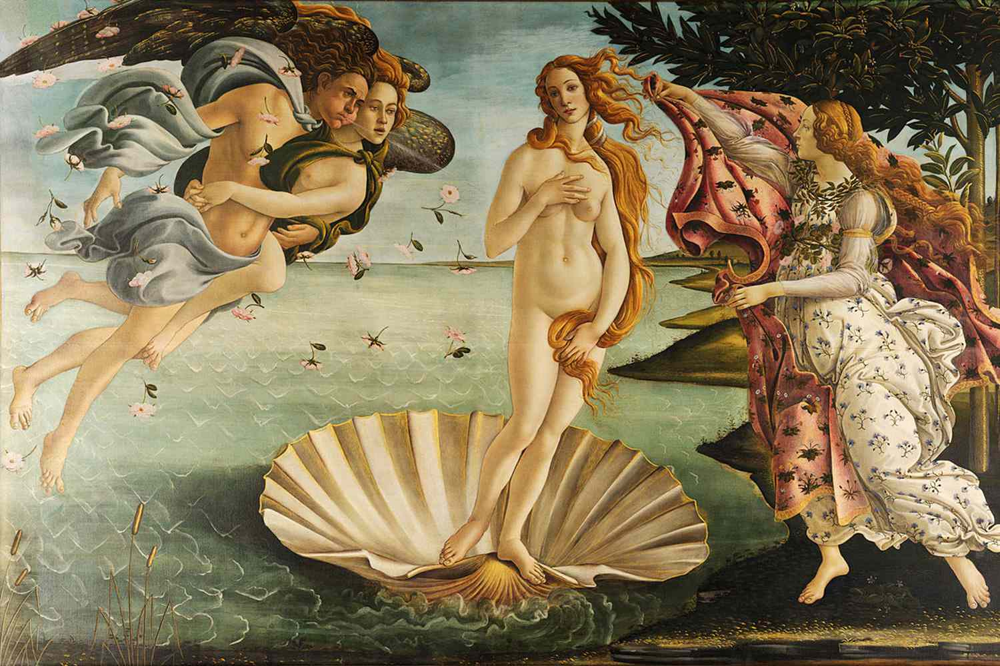
Brunelleschi's discovery transformed the representation of three‑dimensional space on a flat surface, giving artists mathematical tools to create believable depth.
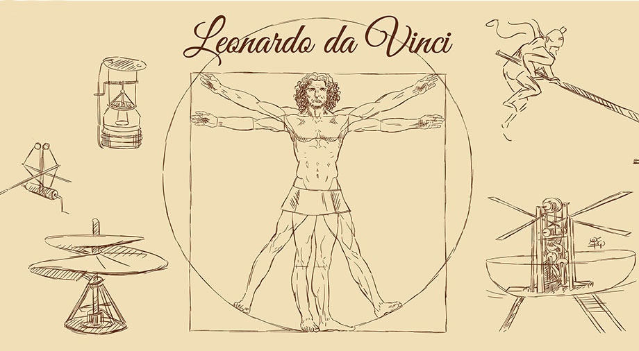
Mathematics became the language of visual art; geometry and proportion were no longer ornamental but fundamental to meaning and beauty.
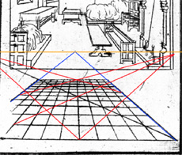
Each perspective system serves different compositional needs and emotional effects—a language of visual structure now available to designers.
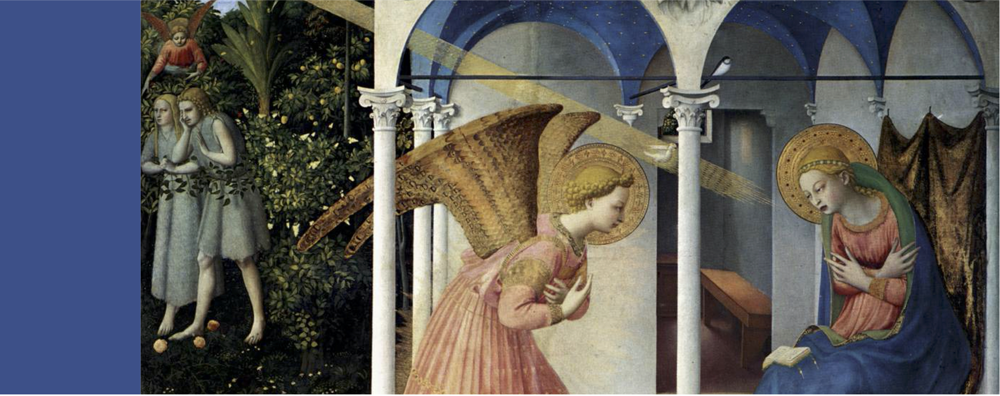
Perspective didn't just depict space—it created psychological presence, drawing viewers into the world of the image and commanding attention.
Atmospheric Perspective: Depth Through Atmosphere and Light
Principle and Development:
While linear perspective provided mathematical structure, atmospheric perspective (also called aerial perspective) offered a more poetic approach to depicting depth. Objects in the distance appear lighter, cooler in tone and less detailed due to atmospheric haze. Renaissance painters like Leonardo da Vinci pioneered this technique, observing that smoke and moisture obscure distant details and shift colors toward cool blues.
Leonardo's notebooks record systematic observation of color changes with distance and atmospheric conditions for scientific study. "Aerial" perspective describes the optical effects of air, moisture, and particulate matter on vision for naturalism. The "perspective of disappearance" notes how detail becomes indistinct with distance for realism. "Chromatic" perspective describes the shift toward cool blues and reduced saturation at distance for color theory. "Value" perspective notes the lightening of dark tones and reduction of contrast with distance for tonal organization. "Focus" perspective observes that only one distance is in sharp focus at any viewing moment for optics. Leonardo recommended depicting foreground in warm tones and distance in blues for naturalistic effect for practice. The "sfumato" technique softened transitions to mimic atmospheric effects on edges for blending. "Unione" created gradual tonal transitions without visible brushstrokes for smoothness. Dutch landscape painters of the 17th century systematized atmospheric effects in marine and sky painting for tradition. "Tonal" painting of the 19th century exploited atmospheric effects for emotional expression in art. "Impressionism" made atmospheric color vibration the primary subject of painting for modernism. "Aerial" photography confirmed the optical principles observed by Renaissance artists for technology. "Depth cues" in psychology research validate atmospheric effects as distance indicators for science. Digital "depth of field" effects in photography software simulate atmospheric focus perspective for media.
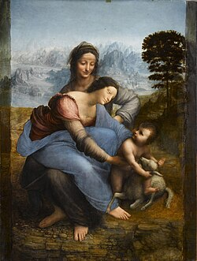
Atmospheric perspective mimics how the human eye perceives distance in nature—a optical truth that artists discovered through careful observation.
Light and atmosphere became the invisible architecture—a tool for organizing space and emotion as powerful as any geometric rule.
Atmosphere transforms a flat surface into a window, evoking the vastness of sky and distance in even modest compositions.
Compositional Principles: The Golden Ratio and Divine Proportion
Mathematical Harmony:
Renaissance artists and theorists became obsessed with mathematical beauty. The golden ratio (approximately 1:1.618), known as the Divine Proportion or Phi, appeared throughout nature—in shell spirals, flower petals and human proportions. Artists believed this ratio represented perfect harmony and incorporated it into compositions through rectangular proportions, spatial divisions and figure placement.
The "divine proportion" was described by Luca Pacioli in "De divina proportione" (1509), illustrated by Leonardo for publication. The golden ratio (φ = 1.618...) appears in pentagram geometry and Fibonacci number sequences for mathematics. "Dynamic symmetry" of Jay Hambidge claimed ancient use of root rectangles in composition for theory. The "modulor" of Le Corbusier applied golden ratio proportions to architectural and graphic design for modernism. "Golden rectangles" can be subdivided infinitely while maintaining the same proportions for geometry. The "golden spiral" approximates growth patterns in nature and classical composition for form. "Golden triangles" and "golden gnomons" provide angular systems for compositional layout for structure. "Phyllotaxis" describes the spiral arrangement of leaves following Fibonacci sequences for nature. "Musical" ratios (octave 1:2, fifth 2:3, fourth 3:4) provided alternative harmonic systems for sound. "Platonic" solids offered three-dimensional proportional systems for spatial design for volume. "Sacred geometry" claimed cosmic significance for specific proportional relationships for mysticism. "Canons" of human proportion (Vitruvian Man) related body measurements to geometric forms for figure. "Architectural orders" (Doric, Ionic, Corinthian) embodied specific proportional systems for building. "Renaissance" harmonic theory linked visual and musical consonance for synthesis. Modern "grid systems" in graphic design rationalize proportional relationships for mass media for layout.
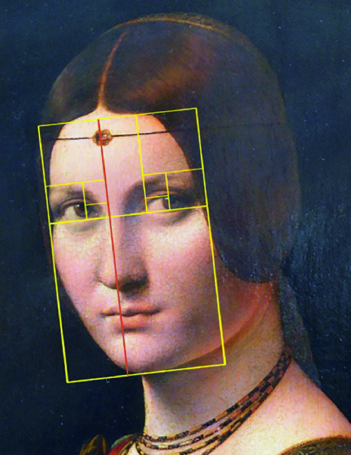
The golden ratio wasn't merely aesthetic preference—it was believed to reflect divine order, connecting human beauty to cosmic harmony.
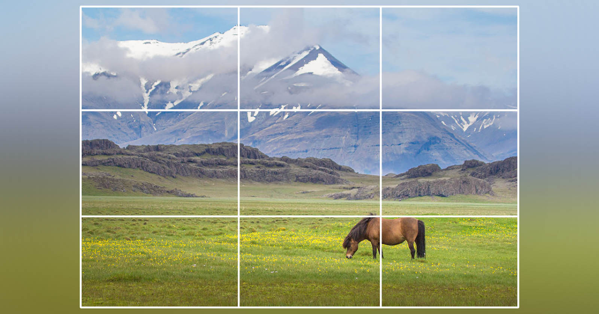
Off‑center placement paradoxically feels more balanced and controlled than symmetry—a principle that still governs modern graphic layout.
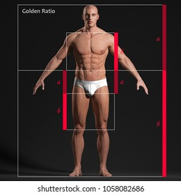
Strategic placement becomes invisible yet powerfully influences how viewers move their eyes through a composition.
Balance, Symmetry and Dynamic Movement
Symmetrical Composition:
Symmetry—mirror‑image organization around a central axis—conveys stability, formality and timelessness. Renaissance churches, palaces and formal portraiture commonly employed symmetry. In graphic design, symmetrical layouts project authority, tradition and rational order. However, perfect symmetry can feel static, so Renaissance artists often introduced subtle asymmetries to maintain visual interest.
"Bilateral" symmetry mirrors elements across a central vertical axis for formal balance. "Radial" symmetry arranges elements around a central point like spokes or petals for emanation. "Translational" symmetry repeats elements at regular intervals (frieze patterns) for rhythm. "Glide" reflection combines translation with mirror symmetry for complex patterns. "Rotational" symmetry repeats elements at angular intervals around a center for movement. "Biaxial" symmetry combines horizontal and vertical mirror symmetries for stability. "Scale" symmetry (self-similarity) repeats forms at different sizes for hierarchy. "Approximate" symmetry maintains general balance with slight variations for interest. "Symmetry breaking" introduces deliberate asymmetry for visual interest for dynamism. "Local" symmetry exists within larger asymmetrical compositions for organization. "Symmetry" conveys stability, order, and formal dignity for meaning. "Asymmetry" suggests movement, informality, and naturalism for expression. "Symmetrical" layouts dominate formal and institutional graphic design for authority. "Asymmetrical" layouts prevail in dynamic and expressive design contexts for energy. "Symmetry" in nature (crystals, organisms) provided models for Renaissance artists for inspiration.
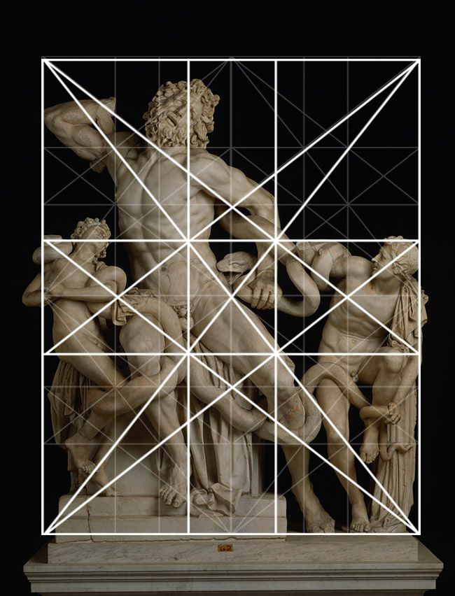
Symmetry whispers of cosmic order and human perfection—ideals the Renaissance held sacred.
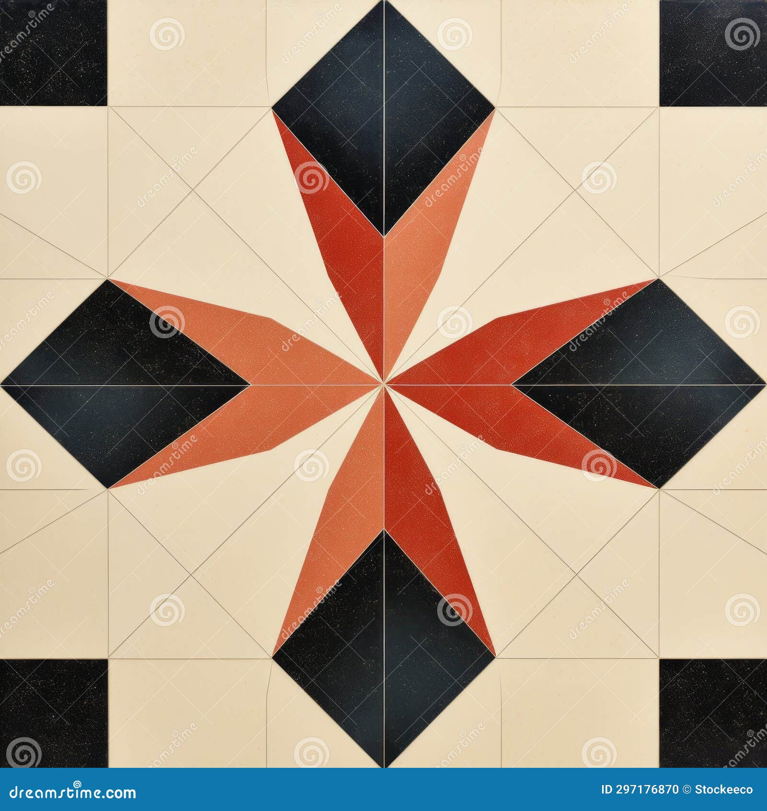
Asymmetry introduces energy and narrative possibility—inviting viewers to complete the visual conversation with their own perception.
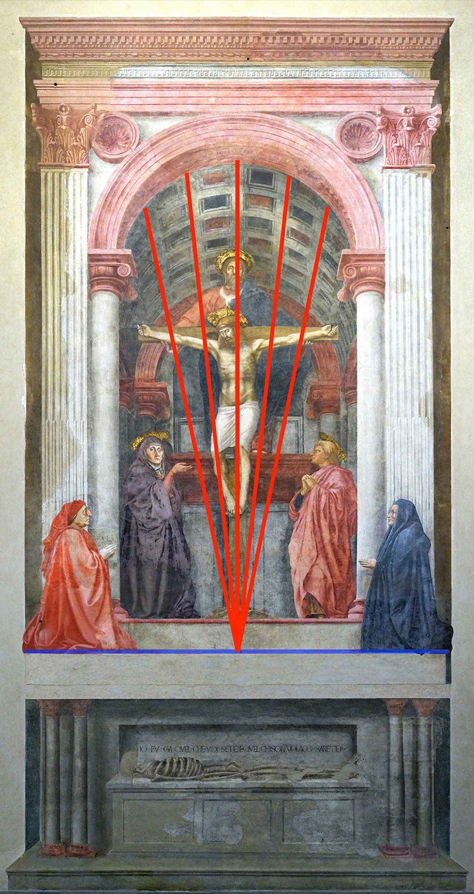
An invisible line of action carries more power than a visible one—the eye follows intention even when the path isn't drawn.
Colour, Light and Symbolic Meaning in Renaissance Design
Colour Symbolism and Psychology:
Renaissance thinkers inherited medieval color symbolism—gold for divinity, blue for heaven, red for passion or sacrifice—but developed these ideas further. They began to understand colour not just as representation but as conveyor of emotion and spiritual meaning. Warm colours (reds, oranges, yellows) advance and energize; cool colours (blues, greens, purples) recede and calm. This understanding became foundational to graphic design theory.
"Primary" colors (red, yellow, blue) carry maximum saturation and symbolic intensity for impact. "Secondary" colors (orange, green, purple) mix primaries for complex associations for variety. "Tertiary" colors create nuanced palettes through further mixing for subtlety. "Complementary" pairs (red-green, blue-orange, yellow-purple) create maximum contrast for vibration. "Analogous" colors (adjacent on the wheel) create harmonious, unified palettes for unity. "Triadic" schemes (equally spaced on wheel) offer balanced variety for diversity. "Split-complementary" schemes combine one primary with adjacent secondaries for interest. "Warm" colors (red, orange, yellow) advance and stimulate for energy. "Cool" colors (blue, green, purple) recede and calm for relaxation. "Value" contrast creates legibility and visual hierarchy for clarity. "Saturation" contrast emphasizes intensity against neutrality for emphasis. "Cultural" color associations vary significantly across historical and geographic contexts for meaning. "Personal" color preferences reflect individual psychology and experience for identity. "Color" forecasting predicts trends in fashion and design markets for commerce. "Corporate" color systems establish brand recognition through consistent palettes for branding.
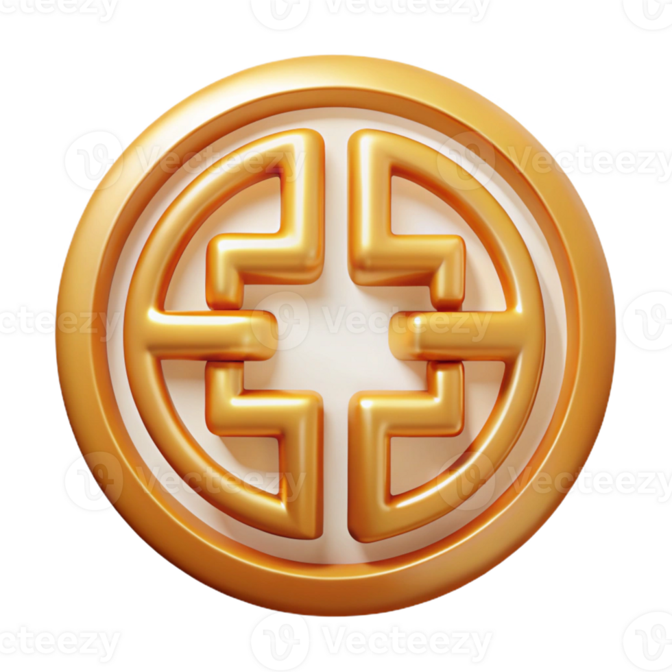
Colour became language—each hue a word in the vocabulary of emotional and spiritual communication.
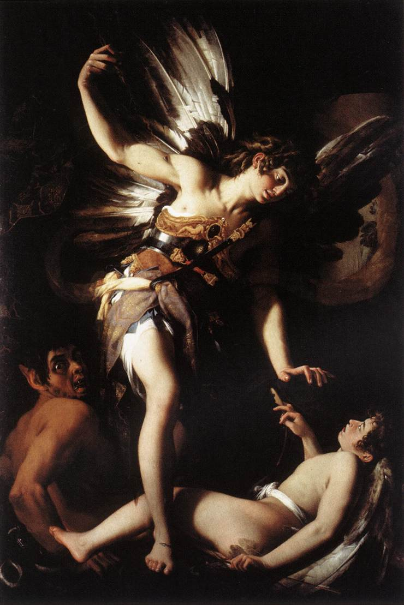
Shadow is not merely the absence of light but an active force—it sculpts form, generates mood and focuses attention like a spotlight.
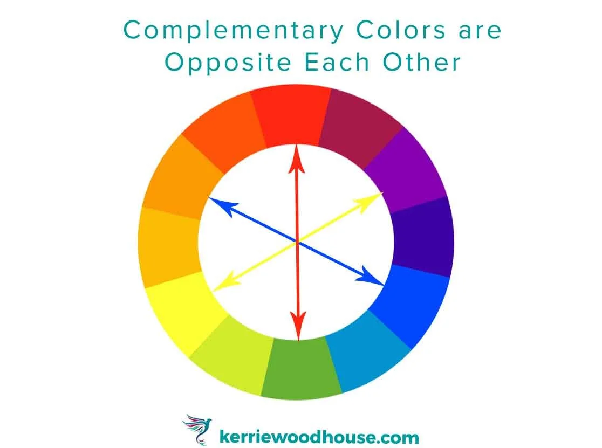
The space between colours is as important as the colours themselves—contrast and harmony work in conversation to create visual meaning.
Typography and Text Integration in Renaissance Graphic Design
Humanist Typography:
As printing technology spread, Renaissance designers developed humanist typefaces based on the calligraphy of classical texts. Unlike the dense Gothic scripts of the medieval period, humanist faces (like Roman type) were more open and readable. Designers began thinking systematically about how text could be arranged to reflect meaning—larger type for importance, varied placement for emphasis, whitespace for rhythm.
"Roman" typefaces revived classical proportions with vertical stress and bracketed serifs for antiquity. "Italic" forms developed from cursive handwriting for space-efficient emphasis for distinction. "Old style" (Garalde) types feature diagonal stress and bracketed serifs for readability. "Transitional" types (Baskerville) move toward vertical stress and sharper serifs for refinement. "Modern" (Didone) types exaggerate contrast between thick and thin strokes for elegance. "Egyptian" (Slab serif) types add heavy serifs for industrial-age display for impact. "Sans-serif" types eliminate serifs for clean, modern appearance for simplicity. "Humanist" sans-serifs retain calligraphic stroke variation for warmth. "Geometric" sans-serifs construct letters from basic shapes for abstraction. "Grotesque" sans-serifs represent early industrial sans designs for functionality. "Script" types imitate handwriting for formal or casual effect for personality. "Display" types sacrifice readability for visual impact for headlines. "Text" types optimize legibility for extended reading for body copy. "Legibility" concerns character recognition in isolation for clarity. "Readability" concerns ease of reading extended text blocks for comprehension.
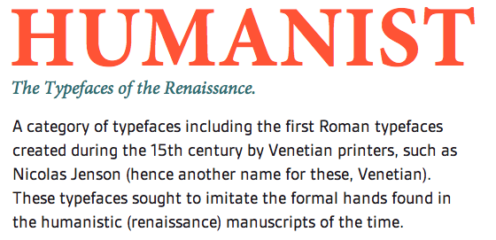
Typography evolved from mere transcription to visual expression—letterforms became instruments of meaning rather than servants of words alone.
The Renaissance page became a composed whole—each element (letters, ornaments, images) working in subtle harmony to communicate message and establish identity.
Renaissance Legacy: Foundation of Modern Graphic Design
The Renaissance established principles that remain foundational to contemporary graphic design:
1. Perspective as Spatial Control - Additional Details:
The mathematical precision of Brunelleschi's demonstrations established a rigorous methodology that digital 3D modeling software still employs today. Computer graphics pipelines use matrix transformations derived directly from Renaissance perspective geometry to render virtual spaces. The "camera" metaphor in software like Adobe Illustrator and Photoshop references the optical principles first codified in 15th-century Italy. Virtual reality environments rely on stereoscopic perspective systems that extend Renaissance monocular depth cues into immersive binocular experiences. Game engines implement "frustum culling" based on the viewing pyramid concepts developed by Alberti. The "isometric" and "axonometric" projections used in CAD software represent direct descendants of the auxiliary views explored by Piero della Francesca. Digital "camera obscura" effects in photography apps simulate the optical phenomena that inspired Renaissance theorists. The "vanishing point" tool in vector graphics software automates the geometric constructions once done by hand with ruler and compass. Perspective correction algorithms in architectural photography software reverse-engineer the spatial distortions that Renaissance artists carefully constructed. The "field of view" settings in 3D applications calibrate the angle of the visual pyramid that Alberti recommended not exceed 60 degrees. Modern "tilt-shift" photography miniaturizes real scenes by manipulating depth of field and perspective cues simultaneously. The "quadratura" tradition survives in contemporary mural painting and immersive installation art where architectural boundaries are visually dissolved.
2. Compositional Harmony - Additional Details:
The golden ratio's appearance in the Fibonacci sequence (1, 1, 2, 3, 5, 8, 13, 21...) provided mathematical justification for its use in growth patterns and organic forms. Le Corbusier's "Modulor" system (1945) applied golden ratio proportions to human-scale architecture and furniture design. The "root rectangles" (√2, √3, √5) used in paper sizes (ISO 216) and architectural modules derive from Renaissance geometric explorations. Dynamic symmetry theory, developed by Jay Hambidge in the 1920s, claimed to find golden ratio systems in Greek pottery and classical architecture. The "rule of thirds" grid overlay in digital camera viewfinders and photo editing software democratizes Renaissance compositional theory for mass amateur use. Grid systems in graphic design—from Josef Müller-Brockmann's Swiss Style to modern CSS frameworks—rationalize proportional relationships for reproducible layouts. The "armature" method of composition analysis superimposes geometric frameworks over masterworks to reveal underlying structural logic. Software algorithms for "smart crop" functions automatically identify golden ratio points and rule of thirds intersections for optimal image framing. The "phi grid" (1:0.618:1) used in some photography apps offers a more precise alternative to the simplified rule of thirds. Musical analogies to visual proportion persist in the "rhythm" and "harmony" of page layout terminology. The "sacred geometry" movement in contemporary spirituality and design traces direct lineage to Renaissance mathematical mysticism. Biometric research suggests human preference for golden ratio proportions may reflect evolutionary adaptations to natural growth patterns.
3. Hierarchy and Emphasis - Additional Details:
The "visual weight" concept in modern design theory quantifies how size, color, and position attract attention, building on Renaissance observations about focal points. Eye-tracking research confirms that viewers instinctively scan images at the "power points" identified by Renaissance theorists. The "F-pattern" and "Z-pattern" reading behaviors identified in web usability studies extend Renaissance linear composition into digital scroll environments. Information architecture disciplines apply Renaissance hierarchy principles to organize complex data systems and navigation structures. The "inverted pyramid" writing structure in journalism parallels the Renaissance technique of placing most important elements in the visual foreground. Data visualization practices use size, color saturation, and spatial position to create hierarchical emphasis in charts and graphs. The "progressive disclosure" interaction design pattern reveals information sequentially, controlling hierarchy through user interaction rather than static composition. Typography systems establish hierarchy through graduated scale relationships (body, subhead, headline, display) that Renaissance book designers pioneered. The "law of proximity" in Gestalt psychology validates Renaissance grouping principles with perceptual science. Color hierarchy in wayfinding systems (red for emergency, yellow for caution, blue for information) extends Renaissance symbolic color coding into functional environments. The "AIDA" marketing model (Attention, Interest, Desire, Action) structures persuasive communication through hierarchical stages. Attention economy theories in digital media quantify the value of hierarchy in competing for limited cognitive resources.
4. Emotional Communication Through Form - Additional Details:
The "sublime" aesthetic category, theorized by Burke and Kant, extended Renaissance emotional color theory into experiences of awe and terror. Romantic landscape painting exploited atmospheric perspective specifically for emotional transport rather than mere spatial illusion. The "synesthetic" correspondence between color and sound explored by Renaissance theorists influenced 19th-century symbolist art and 20th-century abstraction. Kandinsky's "Concerning the Spiritual in Art" (1911) systematized color-emotion relationships derived from Renaissance and medieval precedents. Color psychology research now measures physiological responses (heart rate, galvanic skin response) to specific hues, validating Renaissance intuitions with empirical data. The "warm-cool" color temperature distinction affects perceived spaciousness in interior design, extending Renaissance spatial color theory into architectural psychology. Marketing research demonstrates that color increases brand recognition by 80%, quantifying the commercial value of Renaissance color symbolism. The "emotional design" framework in user experience theory applies Renaissance form-emotion relationships to digital interfaces. Biophilic design principles use natural forms and colors to reduce stress, building on Renaissance observations about organic beauty. The "aesthetic-usability effect" in human-computer interaction research confirms that attractive things work better—a principle Renaissance artists applied to functional objects. Neuroaesthetics studies using fMRI identify brain regions activated by harmonious proportions, providing biological explanations for Renaissance aesthetic preferences. The "atmospheric" quality in contemporary landscape photography and cinema directly employs Leonardo's observations about aerial perspective and mood.
5. Integration of Text and Image - Additional Details:
The "emblem" tradition of the 16th-17th centuries combined motto, image, and epigram in unified symbolic compositions that influenced modern logo design. Aldus Manutius's pocket editions (1501) established the octavo format that made books portable and reading private, transforming textual culture. The "title page" as a designed composition emerged in the 16th century, integrating typography, ornament, and publisher identity. Grangerizing—the practice of extra-illustrating books with added prints—personalized mass-produced texts with unique visual combinations. The "chapbook" tradition of cheap illustrated literature democrat access to image-text combinations previously limited to wealthy patrons. William Morris's Kelmscott Press (1891) revived Renaissance book design principles as a critique of industrial mass production. The "New Typography" movement of the 1920s-30s rejected Renaissance center-axis symmetry for asymmetric layouts while maintaining hierarchical organization. The "International Typographic Style" (Swiss Style) rationalized Renaissance proportion systems into grid-based design methodologies. Desktop publishing software (PageMaker, 1985) democratized the technical capabilities once limited to professional compositors and engravers. The "page description languages" (PostScript, 1984) encoded Renaissance typographic principles into mathematical curves and positioning systems. Web design's separation of content (HTML) and presentation (CSS) parallels the Renaissance distinction between textual meaning and visual form. Contemporary "visual storytelling" and "infographic" practices extend Renaissance integration of narrative and image into data-rich digital environments.
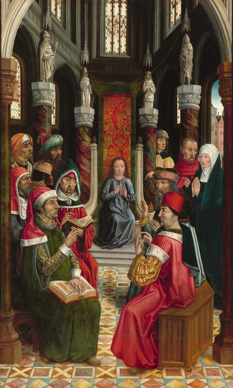
The Renaissance didn't invent beauty or meaning in visual form—it gave designers conscious tools to shape both. That legacy endures in every well-composed page, poster and screen we encounter today.
19th Century: Emergence of Advertising and Commercial Art - Extended
The transformation from elite craft to mass-market tool involved fundamental reconfigurations of production, distribution, and consumption that reshaped visual culture entirely. The "democratization of luxury" through mass-produced goods required visual strategies to make products desirable across class boundaries. Department stores like Le Bon Marché (1852) and Macy's (1858) created temples of consumption that employed graphic design to organize and entice shoppers. The "display revolution" in retail replaced stored inventory with visible merchandise, requiring labels, signage, and packaging design. Mail order catalogs (Sears, 1888; Montgomery Ward, 1872) brought urban visual culture to rural populations, standardizing tastes across vast geographies. The "consumer subject" emerged as a psychological category shaped by visual stimuli and manufactured desires. Advertising psychology developed techniques of suggestion and association that exploited visual memory and emotional response. The "attention economy" of modern media has its origins in the 19th-century competition for public notice in increasingly saturated visual environments. The "flâneur"—the urban stroller who read the city as a text of advertisements and displays—emerged as a new type of modern subject. Gendered marketing emerged distinctly in this period, with visual strategies targeting "separate spheres" of male and female consumption. Children's marketing developed through illustrated trade cards and toy advertisements, creating lifelong consumer habits. The "American plan" of business education (Wharton, 1881) incorporated commercial art and advertising into university curricula.
Industrial Influence and Reproducibility
Steam-powered cylinder presses, developed by Friedrich Koenig and Andreas Bauer (1814), increased printing speed from 250 to 1,100 impressions per hour. The "rotary press" (1843) and "web press" (1865) further accelerated production to thousands of impressions per hour. Chromolithography, perfected by Louis Prang and others, used multiple limestone plates—one per color—to achieve painterly effects at industrial scale. The "halftone screen" (1880s) translated continuous-tone photographs into printable dot patterns through optical and chemical means. Photoengraving processes (Woodburytype, collotype) reproduced photographic images without hand interpretation. The "process color" system (cyan, magenta, yellow, black) standardized color reproduction across different presses and locations. The "type foundry" industry mechanized punchcutting and matrix making, producing millions of identical type sorts. The "Linoype" (1886) and "Monotype" (1887) machines automated typesetting, displacing thousands of hand compositors. The "reprographics" industry developed to serve the needs of mass advertising through specialized trade services. Standard paper sizes and formats enabled efficient planning and predictable results across distributed production. The "color separation" process required skilled craftsmen to analyze and decompose images into printable components. The "proofing" systems allowed clients to approve designs before expensive production runs, formalizing the design-client relationship.
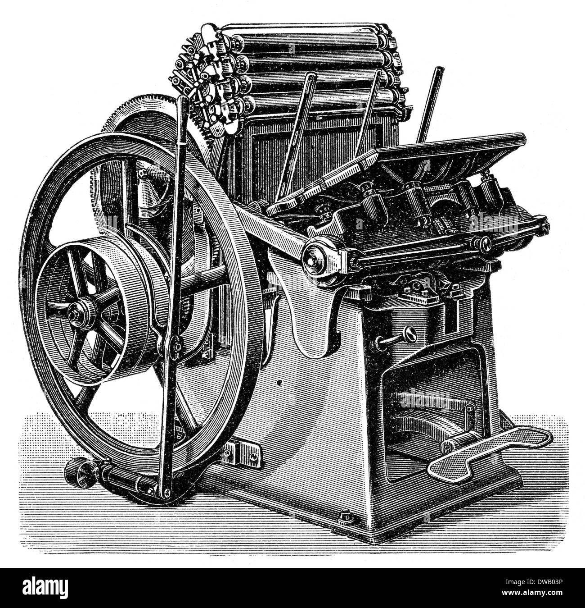
Mass production made image-making a routine part of commerce rather than an occasional luxury.
Poster Art and Visual Persuasion
Jules Chéret (1836-1932) produced over 1,000 posters and established the "maître de l'affiche" (master of the poster) as a recognized artistic specialty. Chéret's "Chérettes"—lively female figures—became iconic representations of Parisian modernity and consumption. Henri de Toulouse-Lautrec's posters for the Moulin Rouge (1891-1901) elevated commercial art to museum-worthy status through artistic innovation. Alphonse Mucha's "Byzantine" style (1894) created the visual vocabulary of Art Nouveau through theatrical posters for Sarah Bernhardt. The "poster craze" of the 1890s saw collectors stripping advertisements from walls and hoardings for domestic display. The "Salon des Cent" (1894) and dedicated poster exhibitions institutionalized commercial art as a legitimate aesthetic category. The "poster style" (Plakatstil) of Lucian Bernhard (1905) reduced imagery to essential silhouettes and flat color, anticipating modernist abstraction. The "Beggarstaffs" (William Nicholson and James Pryde) pioneered bold, simplified poster aesthetics through theatrical advertisements. The "Cassandre" style of the 1920s-30s extended 19th-century poster traditions into Art Deco modernism. Japanese ukiyo-e woodblock prints influenced European poster design through flat color areas, asymmetry, and decorative pattern. The "poster column" (colonne Morris) and dedicated hoarding structures created urban infrastructure for public advertising. The "affiche maroufle" (pasted poster) technique allowed large-scale compositions through tiled paper sheets.
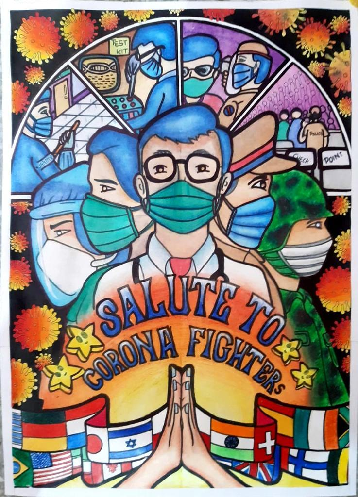
Posters were city‑sized billboards for the eye—designed to capture attention in a single glance.
Typography in Advertising
The "fat face" type style (Thorowgood, 1803) maximized ink density and visibility for poster headlines at distance. "Egyptian" or slab-serif types (Vincent Figgins, 1815) provided heavy, industrial letterforms for commercial impact. "Sans-serif" types, initially dismissed as "grotesque," became modern and efficient choices for advertising display. The "Wood Type" industry produced large-scale display letters through routed end-grain timber. The "chromatic" or multi-color wood type allowed polychromatic typography through layered printing. Hand-lettering traditions persisted for custom logos and unique advertising headlines requiring individual character. The "type foundry specimen book" became a marketing tool and design reference for printers and advertisers. "Logotypes"—custom letterforms for company names—emerged as proprietary brand assets requiring legal protection. The "trademark" registration systems (British 1875, American 1870) formalized typographic and pictorial brand identities. "Script" and "cursive" typefaces simulated handwriting for personal, intimate advertising appeals. "Tuscan" and "ornamented" types provided Victorian excess for decorative and luxury product categories. The "point system" (Fournier, 1737; Didot, 1783; Pica, 1886) standardized type measurement across national boundaries. The "type family" concept (regular, italic, bold, condensed) provided systematic variety for hierarchical advertising composition.
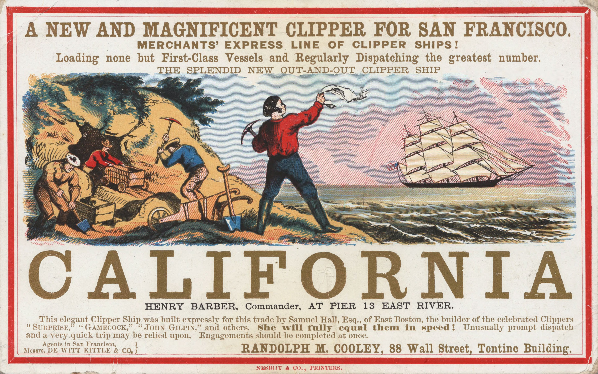
Letterforms began to speak the language of goods and services, not just words—they promised quality, luxury or novelty through shape alone.
Commercial Illustration and Branding
The "Quaker Man" trademark (1877) represented one of the earliest and longest-lived human figure brand mascots. The "Bibendum" (Michelin Man, 1894) demonstrated how abstract product characteristics (stacked tires) could become personable characters. The "Campbell's Kids" (1904) and "Betty Crocker" (1921) extended the mascot tradition into fictional brand personalities. The "Coca-Cola" Spencerian script logo (1887) remains one of the most recognized typographic marks globally. "Trade characters"—visual personifications of products or companies—provided memory anchors in pre-literate markets. The "label" as a designed object emerged with standardized product containers (canned goods, bottles, boxes). "Cut-out" cards and premiums transformed packaging into collectible media and play objects. The "insert" advertisement in newspapers and magazines created new formats for illustrated commercial messages. The "catalogue" as a designed object (Sears, 1894) employed illustration to overcome distance and lack of physical inspection. The "fashion plate" and "costume illustration" created desires for clothing and accessories through idealized representation. The "medical" and "patent medicine" advertising developed specific visual conventions for trustworthiness and efficacy. The "before and after" format emerged in cosmetic and medical advertising as a persuasive visual rhetoric.
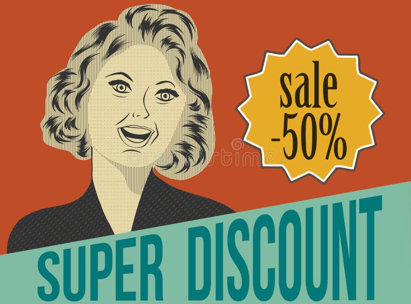
Graphics became synonymous with brands; a company’s visual personality was as important as its goods.
Rise of Advertising Agencies
Volney B. Palmer established the first American advertising agency in Philadelphia (1841), acting as a broker for newspaper space. Francis Wayland Ayer founded N.W. Ayer & Son (1869), pioneering the "open contract" and commission system for agency compensation. The "full service" agency model emerged by 1890, offering creative, production, and placement services under one roof. J. Walter Thompson (founded 1864, incorporated 1896) became the first multinational agency with offices in London and Europe. The "account executive" role developed to manage client relationships and coordinate internal agency resources. The "copywriter" emerged as a distinct profession from journalism, specializing in persuasive commercial prose. The "art director" role developed to oversee visual production and coordinate illustrators, photographers, and printers. The "media buyer" specialized in negotiating rates and placements across proliferating newspaper and magazine options. The "campaign" concept—coordinated multi-insertion advertising with consistent themes—replaced one-off advertisements. The "slogan" or "tagline" became a crucial tool for memory and brand differentiation in crowded markets. The "testimonial" advertisement employed celebrity authority and social proof as persuasive devices. Market research emerged through "coupon" response tracking and circulation auditing to demonstrate advertising effectiveness.
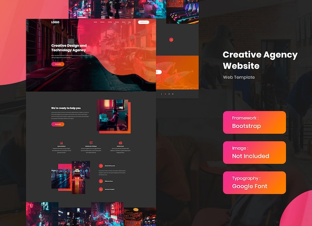
Agencies transformed advertising from a scattershot scattering of posters into coherent, strategic communication.
Cultural Impact and Legacy
The "commodity fetishism" analyzed by Marx described how advertising endowed products with magical social qualities through visual representation. The "spectacle" theorized by Guy Debord (1967) had its origins in 19th-century urban advertising and commercial display. The "consumer society" emerged through the visual and psychological infrastructure created by mass advertising. The "fashion system" of seasonal change and obsolescence required advertising to create continuous desire for the new. The "American Dream" of social mobility through consumption was visually constructed and disseminated through advertising imagery. The "beauty myth" and body ideals were standardized and propagated through illustrated advertisements. The "domestic ideal" of the happy home and family was repeatedly pictured in product promotions. The "imperial" and "exotic" imagery in advertising justified and normalized colonial economic relationships. The "racial" and "ethnic" stereotypes in period advertising reflected and reinforced social hierarchies. The "nostalgia" mode in advertising emerged as a technique to associate products with idealized pasts. The "fear appeal" developed as a persuasive strategy for insurance, cosmetics, and health products. The "lifestyle" advertising approach—selling contexts and identities rather than products—emerged in the late 19th century and dominates contemporary marketing.
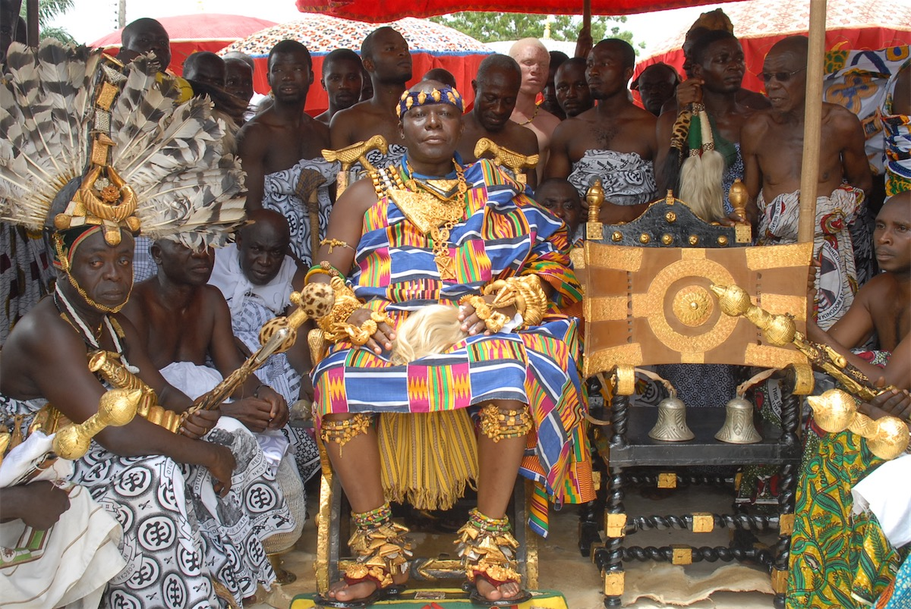
Commercial art turned the cityscape itself into a gallery—and the consumer into an audience trained to read and respond to visual messages.
Art Nouveau's Influence on Early Graphic Design
Art Nouveau, emerging in the late 19th century and flourishing into the early 20th century, profoundly shaped the trajectory of early graphic design by introducing a revolutionary aesthetic that celebrated organic forms, flowing lines, and intricate patterns inspired by nature. This movement, which originated in Europe and spread globally, rejected the rigid industrial designs of the Victorian era in favor of a more fluid, artistic approach that integrated art into everyday commercial products. One of the most significant contributions of Art Nouveau to graphic design was its emphasis on decorative typography and illustrative posters, which transformed advertising from mere product announcements into visually captivating works of art. Artists like Alphonse Mucha, whose iconic posters for Sarah Bernhardt's theatrical productions featured elongated figures, swirling hair, and floral motifs, demonstrated how graphic design could evoke emotion and allure audiences on a deeper level. These designs often incorporated asymmetrical compositions, where elements flowed organically across the page, creating a sense of movement and dynamism that was unprecedented in commercial art. The use of natural motifs—such as vines, flowers, and insects—symbolized a return to harmony with nature, contrasting sharply with the mechanized world of the Industrial Revolution. In terms of typography, Art Nouveau designers experimented with custom lettering that mimicked natural forms, curving and bending to fit the overall composition rather than adhering to strict grids or uniformity. This approach influenced book covers, magazine illustrations, and product packaging, where the design became an integral part of the brand identity. Furthermore, the movement's international scope, with variations in different countries—Jugendstil in Germany, Modernisme in Catalonia, and Secession in Austria—showed how graphic design could adapt to cultural contexts while maintaining a core aesthetic philosophy. Art Nouveau's legacy in graphic design is evident in the way it paved the way for more expressive and artistic approaches to visual communication, influencing later movements and continuing to inspire designers who seek to blend beauty with functionality. The movement's focus on craftsmanship and attention to detail also elevated the status of graphic designers, positioning them as artists rather than mere craftsmen. In advertising, Art Nouveau posters often told stories through their imagery, using symbolism to convey product benefits without overt text, a technique that modern graphic designers still employ. The integration of art and commerce during this period laid the groundwork for the professionalization of graphic design as a field, with designers gaining recognition for their creative contributions. Moreover, the movement's emphasis on innovation in printing techniques, such as color lithography, expanded the possibilities for graphic expression, allowing for richer, more vibrant designs that captured public imagination. Art Nouveau's influence extended to product design as well, where graphic elements were applied to labels, logos, and packaging, creating cohesive visual identities that enhanced brand recognition. This holistic approach to design, where form and function were intertwined, remains a cornerstone of contemporary graphic design principles. The movement also fostered a sense of artistic freedom, encouraging designers to break from traditional constraints and explore new visual languages. In educational contexts, Art Nouveau inspired the development of design schools and academies that emphasized artistic training alongside technical skills. Its impact on early graphic design can be seen in the evolution of style guides and design systems that prioritize aesthetic coherence. Ultimately, Art Nouveau's blend of elegance, nature-inspired motifs, and innovative techniques not only defined an era but also set enduring standards for creativity in visual communication.
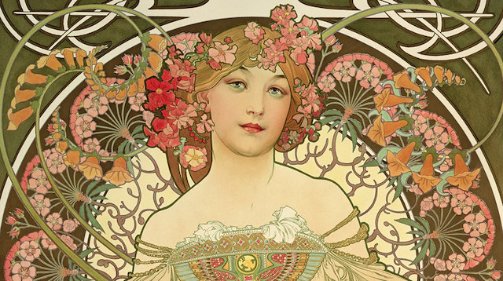
Art Nouveau posters were not just advertisements; they were symphonies of line and color that sang the praises of modernity while whispering of nature's eternal beauty.
Art Deco's Influence on Early Graphic Design
Art Deco, a prominent design movement of the 1920s and 1930s, brought a bold, modern aesthetic to early graphic design, characterized by geometric shapes, luxurious materials, and a celebration of technological progress and urban sophistication. Emerging in the aftermath of World War I, Art Deco reflected the optimism and glamour of the Jazz Age, drawing inspiration from diverse sources including ancient Egyptian motifs, African art, Cubism, and the machine age. This eclectic style revolutionized graphic design by introducing clean lines, symmetrical compositions, and vibrant color palettes that conveyed energy and modernity. One of the key ways Art Deco influenced early graphic design was through its application in advertising and magazine covers, where designers created striking visuals that captured the spirit of the era. The movement's emphasis on geometric forms—such as zigzags, chevrons, and sunbursts—provided a stark contrast to the organic curves of Art Nouveau, offering a more structured and dynamic approach to layout and composition. Typography in Art Deco designs often featured bold, sans-serif fonts with geometric influences, sometimes incorporating decorative elements like stepped letters or metallic effects to suggest luxury and innovation. This typographic innovation influenced the creation of logos and branding for companies, with Art Deco designs becoming synonymous with elegance and progress. In poster art, artists like Cassandre created iconic works for products and events, using simplified forms and dramatic perspectives to convey movement and excitement. The movement's international appeal, showcased at the 1925 Exposition Internationale des Arts Décoratifs et Industriels Modernes in Paris, spread Art Deco aesthetics worldwide, adapting to local cultures while maintaining its core principles of modernity and luxury. Art Deco's influence extended to packaging design, where geometric patterns and bold colors were used to make products stand out on shelves, enhancing visual appeal and brand identity. The movement also impacted book design and illustration, with covers featuring stylized figures and abstract compositions that reflected the era's fascination with speed, technology, and exoticism. Furthermore, Art Deco promoted the use of new materials and techniques, such as chrome plating and airbrushing, which expanded the technical capabilities of graphic designers. This period saw the rise of professional design studios and agencies that specialized in Art Deco styles, professionalizing the field and establishing design as a key component of marketing strategies. The movement's focus on symmetry and balance influenced the development of grid systems in graphic design, providing a foundation for more organized and effective layouts. Art Deco also encouraged experimentation with color, using high-contrast palettes and metallic accents to create eye-catching visuals that demanded attention. In terms of cultural impact, Art Deco designs often incorporated motifs from global cultures, promoting a sense of cosmopolitanism and diversity in visual communication. The movement's legacy in graphic design is evident in its enduring influence on modern styles, particularly in areas like branding, advertising, and digital design where clean, geometric forms remain popular. Art Deco elevated graphic design to an art form that celebrated human achievement and technological advancement, inspiring designers to push boundaries and innovate. Its emphasis on luxury and sophistication set new standards for visual excellence, influencing everything from fashion illustrations to architectural renderings. The movement also fostered a collaborative environment between artists, craftsmen, and manufacturers, leading to integrated design approaches that considered the entire user experience. In educational terms, Art Deco inspired curricula that balanced artistic creativity with commercial practicality, shaping the training of future designers. Ultimately, Art Deco's bold geometric aesthetic and celebration of modernity transformed early graphic design, leaving a lasting imprint on how we create and perceive visual messages today.
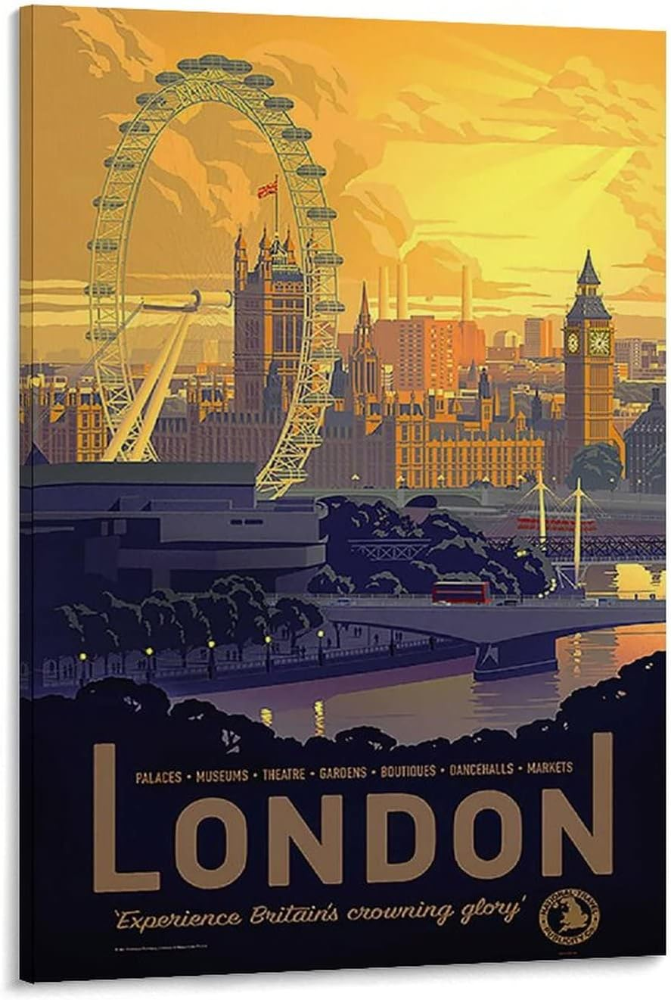
Art Deco was the visual manifesto of the machine age, where geometry met glamour and technology danced with tradition in a symphony of modern elegance.
The Lithography Revolution in Poster Design
Lithography, invented by Alois Senefelder in 1796, transformed poster design in the 19th century by enabling rapid, high-quality color reproduction on large formats across mass markets. This print process used a flat stone surface treated so that ink adhered only to the drawn image while water repelled it from blank areas, allowing artists to produce detailed works with a range of tonal subtleties previously impossible in woodcuts and engravings. Early lithographic posters began as monochrome and found immediate use in advertising events, theater productions, and products. By the 1870s, chromolithography had introduced multiple color plates with generous overlays, producing vivid, saturated prints that seized public attention in busy urban landscapes. The repeatability and relative affordability of lithography made it a pivotal technology for advertisers, enabling widespread distribution of posters that were visually consistent and dramatically more expressive than earlier methods. French artists, including Jules Chéret and Henri de Toulouse-Lautrec, seized upon lithography’s strengths, creating iconic posters full of movement, personality, and modern lifestyle cues. Chéret’s work introduced dynamic composition, bright primary palettes, and playful characterizations that redefined commercial aesthetics; Toulouse-Lautrec’s nightlife scenes captured the mood of Montmartre with psychological depth and graphic economy. Lithography facilitated the fusion of typography and illustration, with bespoke lettering integrated into the pictorial space as a unified visual message. The process also encouraged experimentation with textures and layered effects, as printmakers could overlay pigment and additives to create shimmer, gradients, and tactile richness. High-volume production of lithographic posters made them a visible part of city streets; railway stations, theaters, and shop windows became galleries that shaped public taste and brand recognition. The effectiveness of posters spurred the creation of outdoor advertising districts and professional billposters, who coordinated large campaigns and standardized display systems. Lithography’s impact extended to illustrated magazines and packaging, where it brought color to editorial spreads and labels, fostering a modern communication style centered on clarity and appeal. Technological improvements—like aluminum plates and offset lithography—further accelerated production speed and reduced costs into the 20th century, laying the groundwork for contemporary digital printing. As a result, lithography is recognized as a cornerstone innovation that allowed graphic design to become an accessible, professional field with scalable workflow.
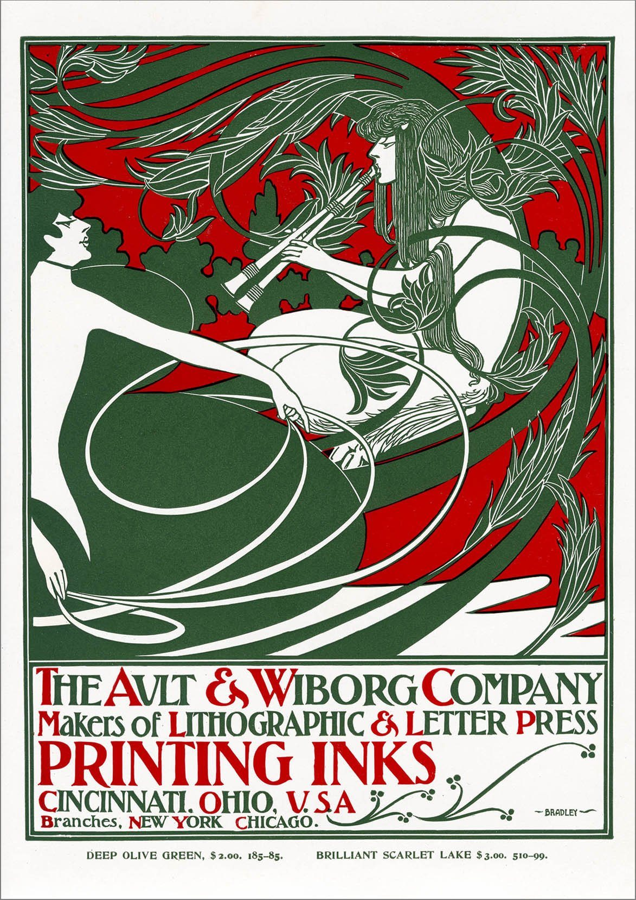
Lithography turned posters into public art—instant, colorful, and ubiquitous—transforming city streets into dynamic visual narratives.
Toulouse-Lautrec and Mid-20th Century Graphic Design (1940s-1960s)
Henri de Toulouse-Lautrec, though active in the 1890s, set a visual standard that mid-20th century designers continued and reinvented. His use of flat color planes, bold outlines, and psychological character depiction in Parisian nightlife posters created a graphic vocabulary that the 1940s-1960s continued through new media and printing advances. In the 1940s, the global context of war and reconstruction shifted design toward clear communication, striking iconography, and utilitarian typography. Government propaganda, public service announcements, and wartime enlistment posters used similar directness and emotional immediacy that Toulouse-Lautrec had demonstrated decades earlier. In the 1950s, commercial advertising embraced optimism and consumer culture, and graphic design adopted new photographic techniques, lithographic advancements, and photomechanical reproduction to deliver glossy magazine posters and cinematic billboards. Designers like Saul Bass and Paul Rand echoed Lautrec’s emphasis on simplicity, symbolic figures, and reduction to essential forms, reinforcing the link between expression and function. Mid-century modernist design also favoured typographic clarity, asymmetric layouts, and grid systems derived from Bauhaus and International Typographic Style. Posters for airlines, automobiles, and film festivals used crisp sans-serif type, dynamic diagonals, and geometric abstraction to convey speed, progress, and modern lifestyle. From 1940 to 1960, design moved into mass media—radio, television, and cinema—yet print posters remained vital; they bridged traditional audience reach and emerging visual languages. Creative agencies organized by the 1960s produced sophisticated campaigns where branding consistency, color psychology, and photomontage became tools of persuasion. Meanwhile, independent artists and bespoke studios kept the hand-made sensibility alive, producing screenprints and limited-edition posters that referenced Toulouse-Lautrec’s artisanal roots while using contemporary techniques. The mid-century design period saw the rise of visual identity systems, where logo, packaging, and advertising followed unified principles; this integrated approach echoed Toulouse-Lautrec’s holistic art practice, where illustration and text formed inseparable composition. Technological progress in print—offset lithography, transferability of color separations, automated plate-making—provided the means to scale quality across thousands of posters in a way earlier artists like Toulouse-Lautrec would have admired. From 1940s wartime clarity to 1960s pop culture exuberance, graphic design continued to build on Lautrec’s legacy of poster storytelling, character-driven imagery, and the power of accessible public art. The period also refined poster as a medium for identity, activism, and entertainment, making it a key influencer of mass perception and cultural memory. By the late 1960s, posters had become both promotional objects and collectible visual art, partly thanks to the precedent set in the 1890s and sustained by mid-century designers adapting those principles to new visual environments.
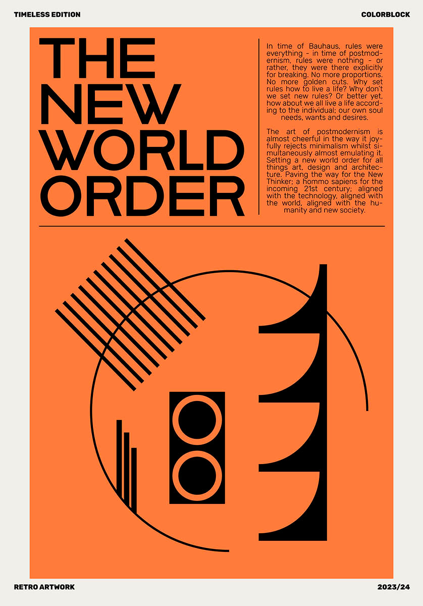
From Toulouse-Lautrec’s Paris streets to 1960s Madison Avenue, posters remained the arena where art and advertising met and evolved.
Swiss International Style: Clean Typography and Grid Systems
The Swiss International Style, also known as the International Typographic Style, emerged in the 1950s and 1960s and became one of the most influential graphic design movements of the mid-20th century. It emphasized neutrality, clarity, and objectivity through clean typography, asymmetrical layouts, and rigorous grid systems. Swiss designers sought to remove all superfluous decoration and to focus on functional communication, making design more universally understandable across languages and cultures. The movement favored sans-serif typefaces like Akzidenz-Grotesk and Helvetica, which were valued for their legibility and visual neutrality. Typographic hierarchy was established through size, weight, and spacing, not through ornate embellishments, allowing the message to be read quickly and efficiently. Grids were at the heart of the style, providing a modular framework that enforced visual order, consistency, and balanced white space. This system made it easier to align text and imagery with precision, creating a sense of calm structure and professionalism. Visual elements such as photography, simple geometric shapes, and baton-line icons were combined with typography to produce clear, data-driven compositions. The Swiss style proved especially effective for corporate identity, wayfinding systems, and information graphics, where clarity and rapid comprehension were essential. Prominent Swiss practitioners like Josef Müller-Brockmann, Karl Gerstner, and Armin Hofmann demonstrated the style’s potential in posters, annual reports, and catalogs that used rational design to communicate modernity and trustworthiness. International adoption of the style came quickly, influencing design education and practice worldwide, from Europe to the United States and beyond. Corporations like IBM and Lufthansa later adopted Swiss-inspired systems in their branding, cementing the movement’s lasting impact. The style also contributed to the rise of modular and scalable design systems, which are now a cornerstone of digital interface design. Even today, the core principles of the Swiss International Style are seen in minimalist web design and app UI, where grid-based layouts and straightforward typography support usability and accessibility. This historical phase marked an important shift from expressive decoration to objective, user-centered design—a transformation that continues to guide modern graphic communication practices.
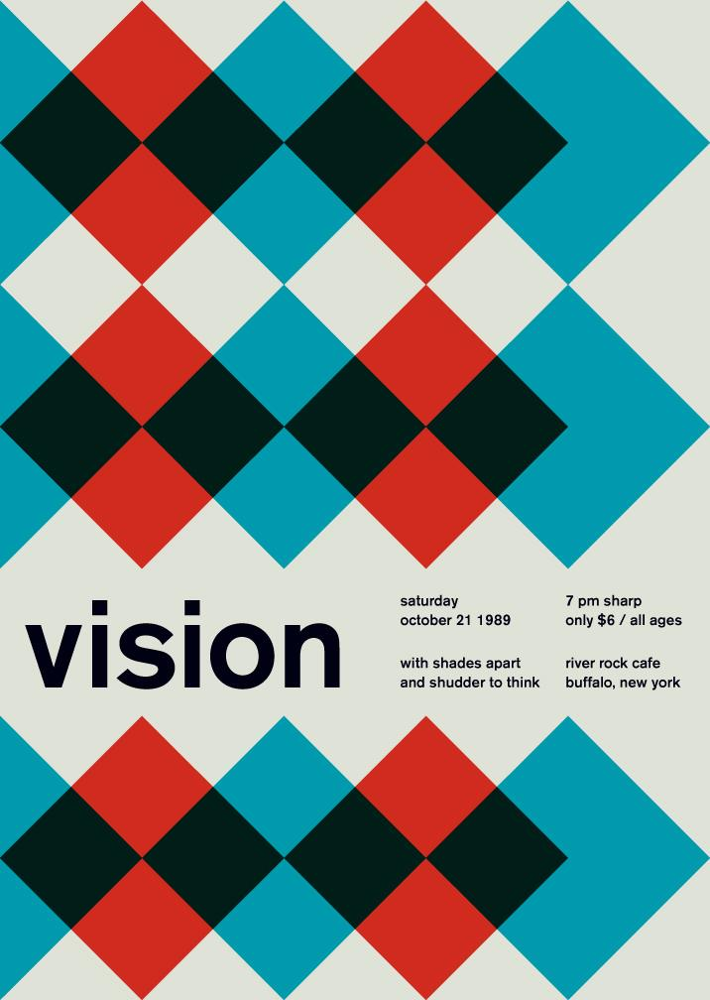
Swiss style made design a tool for clarity and universal communication, not just visual ornament.
Modernism, Minimalism, and Functional Design
Modernism extended the principles of Swiss International Style through the mid and late 20th century, reinforcing minimalism as a dominant philosophy in graphic design. It favored reduction of elements to the essentials, subduing decorative excess in order to improve legibility, usability, and visual economy. The functional design ethos meant every element on the page had a purpose: form followed function. In typography, this translated to clean sans-serif faces, consistent baseline grids, clear spacing, and restrained color palettes. In layout, minimalism adopted ample white space as a key design asset, letting the message breathe and the user focus. The style often used monochrome or simple duotone palettes to emphasize clarity, while strategically placed accents guided viewer attention. Designers like Massimo Vignelli, Bruno Munari, and Otl Aicher exemplified these values through book design, signage, and corporate identity schemes that worked across media. Systems thinking entered design practice, with repeatable components and templates that maintained coherence across print, packaging, and digital outputs. Minimalism’s influence also appeared in product design and architecture; the same grid and visual discipline bridged disciplines and led to holistically designed brand experiences. Starting in the 1960s and continuing through the 1990s, function-first design powered everything from transit maps to instruction manuals, celebrating clarity over flourishes. As computers became central, minimalism laid the groundwork for interface design, where users demanded rapid comprehension and minimal distraction. The simplicity of modernist minimalism did not equate to lack of sophistication; in fact, it required careful typographic control, visual hierarchy, and content curation to achieve elegance in restraint. This approach remains essential in contemporary UX/UI, wayfinding, and information design, where dense data must be distilled into coherent visuals. Through the modernist minimalism lens, effective design is a service to the audience, reducing cognitive load and enhancing decision-making through clean, functional visuals.
Minimalism proved that less can be more, and that the most powerful design often goes unseen in service of the user.
Birth of Corporate Identity and Branding
The emergence of corporate identity and branding was a decisive development in the evolution of graphic design during the mid 20th century. It took the principles of modernism and Swiss style — clarity, consistency, repeatable systems — and used them to create coherent brand identities that functioned across products, print, packaging, environments, and marketing communications. Graphic design became a strategic business tool, not just visual decoration. Companies like IBM, ABC, Mobil, and Shell invested in corporate identity programs that defined logotypes, color palettes, typography, imagery, and usage rules. Designers such as Paul Rand, Chermayeff & Geismar, and Walter Landor pioneered these systematic approaches, producing iconic identities that were applied with rigor in annual reports, signage, uniforms, and advertising. A strong brand identity aimed to build trust and recognition by delivering the same visual message regardless of medium or geographic market. The creation of style guides and manuals became standard practice, specifying minimum clear space, correct color formulas, permitted typefaces, and placement conventions. This approach solved practical challenges in scaling design for multinational organizations and helped maintain personality over decades. Branding also expanded beyond logos to include tone of voice, iconography, and customer experience, emphasizing an integrated system of design. The corporate identity movement was accompanied by advances in print technology, packaging engineering, and exhibition design, which allowed brand systems to be executed with high quality at scale. Throughout the 1970s and 1980s, the discipline of “identity design” established pathways in design education, with specialized workshops and courses dedicated to brand systems. Businesses began to see brand equity as an asset; identity became linked to market value and competitive advantage. The influence of corporate identity persists in today’s design systems for digital products, where component libraries, design tokens, and guidelines follow the same rules of consistency and modular thinking that were developed in this period. In short, the birth of corporate identity turned graphic design into a repeatable, measurable service that shapes how organizations are recognized and remembered.
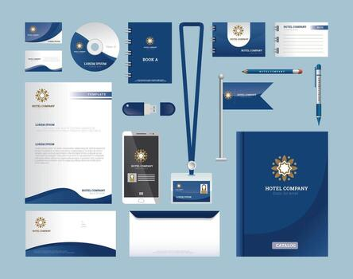
Corporate identity made design a key business strategy, grounding visual expression in consistency, recognition and trust.
Digital Revolution (1980s-Present)
The Digital Revolution in graphic design began in the 1980s with the advent of personal computers and desktop publishing software, transforming both the tools and the process of visual communication. Early software like Adobe Illustrator, Photoshop, and PageMaker allowed designers to create, edit, and output artwork digitally, eliminating many manual tasks and drastically shortening production cycles. This era introduced pixel-based manipulation, vector illustration and precise typography controls unheard of in analog methods, and it enabled experimentation with layering, transparency, and effects that would have been laborious or impossible in pre-digital print production. The 1990s saw the explosion of the internet, which created global access to design resources, distributed media, and new communication formats; designers had to adapt to screen-based layouts and interactive systems. Corporate branding extended into digital spaces with websites, email campaigns, and early multimedia CD-ROMs, necessitating responsive and scalable identity systems. The 2000s and onward deepened the shift as mobile devices, social media, and UX/UI design became central, with design metrics and user data shaping creative decisions. Tools like Sketch, Figma, and Adobe XD introduced collaborative, cloud-based workflows that allowed real-time co-editing and design handoff to development teams. Accessibility, performance, and user experience emerged as top priorities, and design systems migrated from isolated brand manuals to shared component libraries and design tokens managed across platforms. Motion graphics, animation, and micro-interactions became important for conveying brand personality in digital environments; this broadened the scope of graphic design into interaction design and digital product strategy. Meanwhile, digital print technologies continued to evolve, with variable data printing, nanographic press, and eco-friendly workflows reducing waste while enabling personalized direct mail. The Digital Revolution also democratized design; online templates, platforms like Canva, and open-source resources made basic design more accessible to non-designers while raising expectations for professional outputs. Challenges of the digital age include information overload and reduced attention spans, which return us to modernist teachings: clarity and hierarchy are more critical than ever. At the same time, global connectivity means visual languages are shared and hybridized rapidly, with motion, AR, and VR expanding the possibilities of experience design. In professional education, digital tool proficiency now sits alongside conceptual thinking, visual strategy, and ethical considerations around inclusivity and cultural representation. From desktop publishing to AI-assisted generation, the Digital Revolution has turned graphic design into a multidisciplinary, iterative, and globally networked practice, significantly influencing how we perceive, process, and produce visual content.
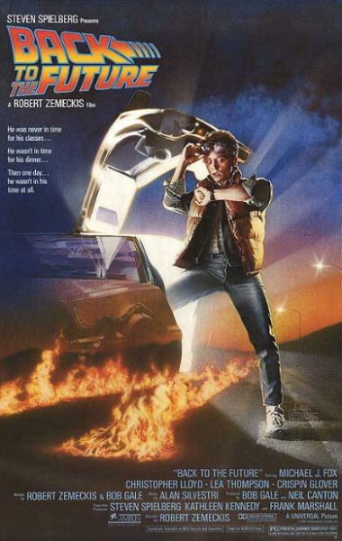
Digital tools expanded the designer’s palette, making visual communication faster and more interactive while raising the stakes for clarity and user focus.
Computer Technology Transformed Design
Computer technology transformed graphic design by introducing power, precision, and speed far beyond pen-and-paper workflows. In the 1980s, desktop publishing democratized design with tools like Adobe Illustrator, Photoshop, and QuarkXPress, meaning that designers could move quickly from concept to printed art without specialized mechanical prepress setups. The digital pixel and vector languages allowed designers to create scalable graphics, manipulate color with accuracy, and apply effects that were previously analog-dependent. Fonts became digital objects, enabling thousands of typefaces with kerning, tracking, and hinting controls administered in real time. As CPUs and GPUs improved, rendering complex layouts became instantaneous, which supported rapid prototyping and iteration. This transformed professional expectations: clients demanded more options and faster turnaround, and creative processes shifted toward experimentation and refinement. In the 1990s, the transition to digital craft extended to Prepress and printing; PostScript, PDF workflows, and RIP technology assured that onscreen design matched physical output. Designers could now produce entire brand systems—including logos, stationery, packaging, and signage—in a matter of hours instead of weeks. The arrival of the web introduced additional constraints (screen resolution, file size, responsiveness) and opportunities (interactive animation, rich media), requiring new skills in HTML/CSS and UI layout. Software steadily moved to cloud-based collaboration, introducing version control, shared libraries, and feedback cycles that mirror modern agile product teams. Automation tools based on scripts and APIs allowed repetitive tasks to be scaled, while plugins and extensions expanded capability into 3D rendering, data visualization, and complex generative design. Accessibility and validation tools also emerged, helping to enforce inclusive typography, color contrast, and responsive behavior. In recent years, AI and machine learning have accelerated this transformation by enabling auto-layout, style transfer, and asset generation, while computation and programming paradigms encourage designers to work with data-driven interfaces and motion. Overall, computer technology has turned graphic design into a hybrid craft involving visuals, interaction, and systems thinking, where speed and global distribution amplify the impact of good design.
The computer shifted design from static artifacts to dynamic systems, making precision and iteration the new standard.
Rise of Digital Media, Web Design, and UI Design
The rise of digital media in the 1990s and beyond redefined the scope of graphic design, positioning it at the heart of communication, information, and interactive experiences. Web design emerged as a distinct discipline, with designers creating layouts for monitors, considering browser behavior, screen resolution, and navigation hierarchies. Early websites were built with static HTML and inline styles, but quickly evolved with CSS, JavaScript, and responsive design principles that allowed content to adapt to varying screens from desktops to mobile devices. This transition demanded a new kind of visual literacy—one that considered user flow, usability, and the limits of bandwidth while remaining visually engaging. User Interface (UI) design became critical as software and web applications required intuitive controls, clear affordances, and accessible interactions. Theories from cognitive psychology—such as Hick’s Law and Gestalt principles—were adopted to make interfaces easier to scan and navigate. Designers developed wireframes, interactive prototypes, and UI pattern libraries to standardize interface components across products and teams. Digital media platforms, from social networks to streaming services, brought forward a demand for consistent branding in dynamic contexts (icons, avatars, and responsive logos). This era also promoted the convergence of graphic design with UX strategy, where user research and analytics informed visual decisions to improve engagement and conversion. Accessibility guidelines (WCAG) introduced legal and ethical requirements requiring designers to incorporate contrast ratios, keyboard navigation, screen-reader labels, and adaptable layouts from the start. As web design matured, design systems and component-based workflows (Atomic Design, Material Design, Fluent UI) became foundational, enabling scalable, reusable UI elements and consistent behavior across digital products. Motion design and micro-interactions added expressiveness and feedback while still adhering to usability, making interfaces feel alive with subtle transitions and interactive cues. By the 2010s, mobile-first design dominated, encouraging priority-based content structures and progressive enhancement. The rise of design tools like Sketch, Figma, and Adobe XD provided collaboration features where designers, developers, and stakeholders could iterate in real time. Today, digital media and UI design reach beyond screens into voice interfaces, AR/VR experience, and multimodal systems, but the core imperative remains: communicate clearly, respond to users, and create efficient, enjoyable interactions. The continuous evolution of web standards and platform capabilities ensures that web/UI design stays experimental while grounded in user-centered principles.
Digital media and UI design made graphic design a living ecosystem, blending aesthetics with usability across every screen.
Social Media and Mobile Design Became Dominant
The rise of social media and mobile devices in the 21st century has made digital design fast-paced, contextual, and user-driven. Design now must work seamlessly across multiple screen sizes and interactive modalities, with mobile interfaces often serving as the primary touchpoint. Social media platforms require rapid content creation, with posts, stories, and videos optimized for immediate attention and effortless sharing. This demand has driven designers to favor bold typography, strong visual hierarchy, and concise messaging so that communication works even in fragmented feed environments. Additionally, users expect consistent branding across desktop apps, mobile apps, and responsive websites, which has led to the creation of comprehensive design systems and component libraries. Accessibility is more visible in social/mobile contexts, with requirements for readable text sizes, tap targets, voiceover labels, and dark mode support. Micro-interactions and motion became essential to guide users, signal feedback, and make experiences feel alive while preserving clarity. Data analytics and social engagement metrics now directly influence design choices, such as button placement, color contrast, and content order. Because social media content must travel internationally, designers also evaluate cultural nuances and localization for global audiences. Platforms like Instagram, TikTok, and Snapchat introduced vertical video and full-screen immersive formats that changed how visual storytelling is structured. Mobile-first design is a default approach, with priorities centred on performance, speed, and reducing cognitive load. Strategies like progressive enhancement and adaptive imagery ensure content is inclusive of varying network conditions and device capabilities.
The dominance of social and mobile also strengthened the role of designers as strategists, connecting brand behavior with user needs in a digital ecosystem. Over time, trends and UI patterns stabilize into recognized conventions (hamburger menus, bottom navigation bars, cards, stories) that ease learning and increase reliability. Consequently, designers now balance brand identity and systematic usability while enabling agility to respond to rapid platform changes and user trends. Looking ahead, the mobile/social design domain continues to evolve with AR, voice interfaces, and AI-generated content, but the core imperative stays: deliver clear, compelling, and user-centric visuals under compounding constraints.
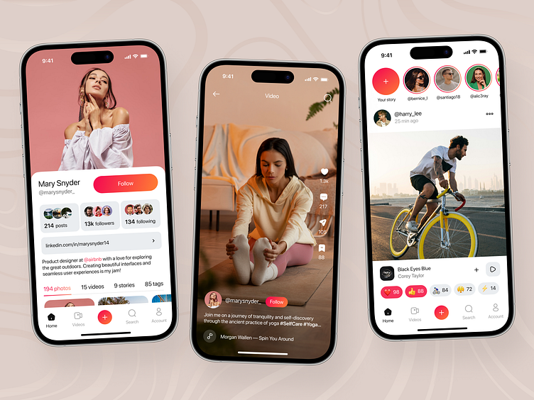
Social and mobile design transformed graphic design from static craft to a continuous, data-informed conversation.
User Experience (UX) Design: Fundamentals and Importance
User Experience design is the process of creating products and services that provide meaningful, delightful, and seamless experiences to people. It blends psychology, research, interaction design, information architecture, and usability testing to ensure that digital and physical designs meet user needs with minimal friction. UX design focuses on the whole journey, from first discovery to long-term satisfaction and advocacy, and is measured by how efficiently and pleasantly users can complete their tasks.
A strong UX process begins with understanding users: who they are, what they want, what challenges they face, and what context they operate in. These insights come from interviews, surveys, observations, and analytics. Designers then define clear personas, scenarios and user stories that guide the design direction.
UX design also involves structuring content and controls in ways users can predict and understand, using information architecture and interaction patterns that align with human cognition. Good UX reduces cognitive load, avoids unnecessary choices, and supports intuitive flows.
Accessibility is a UX imperative: ensuring designs work for people with diverse abilities and devices. This includes readable text size, sufficient contrast, keyboard navigation, screen-reader compatibility, and adaptable layouts.
Prototyping is another key UX activity: low- and high-fidelity prototypes help test ideas quickly before expensive implementation, reducing risk and improving stakeholder alignment.
UX measurement uses qualitative and quantitative metrics such as task success rate, time on task, error rate, usability score, and customer satisfaction scores. Continuous user testing and iteration make UX work resilient and responsive to change.
In modern teams, UX is cross-functional: designers collaborate with developers, product managers, content strategists, and researchers to deliver integrated outcomes.
The relationship between UX and graphic design is synergistic: visual design communicates brand tone and clarity, while UX ensures the content and interactions are usable and meaningful. Together they create designs users trust and enjoy.
In digital products, UX spans from layout and navigation to microinteractions and feedback. Every transition, button behavior, and form field labeling contributes to the experience.
A mature UX practice also includes system thinking: design systems, reusable components, and documentation that keep user experiences consistent across products.
Finally, modern UX design accounts for ethical considerations: data privacy, transparency, avoiding manipulative patterns, and supporting wellbeing in addition to usability.
When UX is done correctly, it lowers support costs, increases conversion and retention, and builds stronger user loyalty.
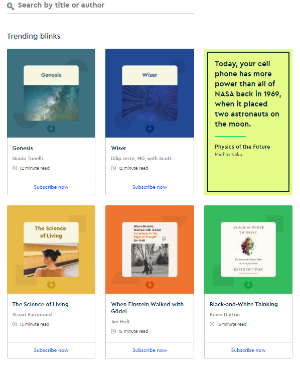
UX design is the bridge between user needs and product goals. It makes technology accessible, useful, and enjoyable by shaping every interaction with clarity and empathy.
Motion Graphics and Animation in UX and Visual Design
Motion graphics and animation use motion, timing, and transitions to communicate information, direct attention, and create meaningful user interactions. They are a powerful extension of visual design that brings static layouts to life, improving comprehension and creating emotional connection.
Well-crafted motion helps users understand interface behavior. For example, animated transitions between screens show how UI states are related, reducing cognitive load and preventing abrupt changes that can disorient users. Micro-interactions—small movements on button hover, tab selection, or loading progress—give feedback and make interfaces feel responsive and alive.
Designers use key principles from animation in this context: easing (slow start/stop), duration (time for action), and contrast (clear start/end). These principles ensure motion is readable and does not distract from content.
Motion graphics also support branding by reinforcing visual identity through movement styles—subtle fade-ins, dynamic reveals, or bold overlays can convey personality (calm, energetic, professional).
In informational contexts, animated data visualization communicates trends faster than static charts. Showing growth with animated lines or changing maps makes patterns easier to grasp. However, motion must be used judiciously: excessive animation can overwhelm users, harm performance, and reduce accessibility.
Accessibility requirements include prefers-reduced-motion settings (user choice to minimize animations), ensuring animations do not trigger vestibular disorders, and maintaining readability when motion is disabled.
Prototyping with motion can happen in tools like Adobe After Effects, Figma Smart Animate, Principle, and Lottie, then be translated into code using CSS animations, JavaScript, or native frameworks.
The process usually starts with storyboards and interaction flows, defining when and why each motion occurs. Then designers test with users to confirm that animations improve clarity and delight rather than distract.
Successful motion design supports task completion by creating hierarchy through movement—primary flows have stronger, faster transitions; secondary actions use subtler effects.
It also increases perceived performance: a well-timed loader animation can make waiting feel shorter by keeping users engaged and informed about progress.
As devices and interfaces grow (web, mobile, AR/VR), motion design becomes a key UX pillar that unifies interactions across modalities, from touch to gesture and spatial experiences.
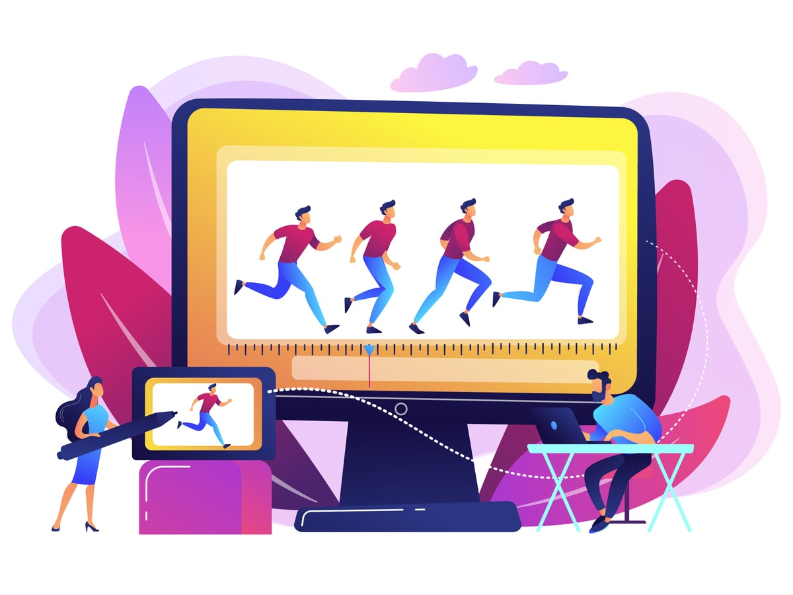
Motion makes design readable; it guides the eye, clarifies intent, and turns digital experiences into living narratives.
3D Design and Visualization in Art, UX, and Product Development
3D design and visualization integrate depth, volume, and spatial reasoning to create immersive and realistic representations of objects, environments, and interactions. In the context of visual art and user interface design, 3D content can enhance comprehension through rendered models, perspective views, and interactive walk-throughs.
Modern software (e.g., Blender, Cinema 4D, Autodesk 3ds Max, SketchUp) enables artists and designers to build, texture, light, and animate in three-dimensional space. These tools help to visualize architecture, product designs, branding environments, and motion concept ideas before production.
3D design also plays a critical role in UX for virtual and augmented reality applications, where accurate depth cues and scale influence usability and user comfort. In AR/VR, good 3D visualization considers physical context, user movement, and interaction affordances to avoid nausea and create intuitive behaviors.
Effective 3D visualization uses clear hierarchies of form, lighting contrast, and camera framing to highlight key features. A good model shows structure with readable detail while avoiding unnecessary complexity that can obscure meaning.
In product design, section views and exploded diagrams make complex assemblies understandable at a glance. Animations of 3D models (rotation, disassembly, part movement) provide dynamic storytelling that static images cannot.
Render styles range from photorealistic to stylized, and each choice supports different communication goals: realism for technical validation, illustrative rendering for concept discussion, or minimal wireframes for early ideation.
3D design workflows increasingly integrate with 2D design systems through tools that export assets and render sprites for use in web/mobile UI. This allows designers to maintain visual consistency across flat interfaces and three-dimensional elements.
Performance is a key consideration: 3D scenes should be optimized for target platforms by reducing polygon count, using appropriate texture resolutions, and implementing level-of-detail techniques.
Accessibility in 3D visualization also matters: alternative 2D representations, textual descriptions, and keyboard-friendly controls help ensure broader usability.
Collaboration is often cross-disciplinary: 3D designers work with engineers, architects, UX researchers, and marketing teams to align visual output with functional requirements and user insights.
As the metaverse and immersive design evolve, 3D visualization is becoming a core asset in storytelling and brand experiences, bridging digital and physical identities.
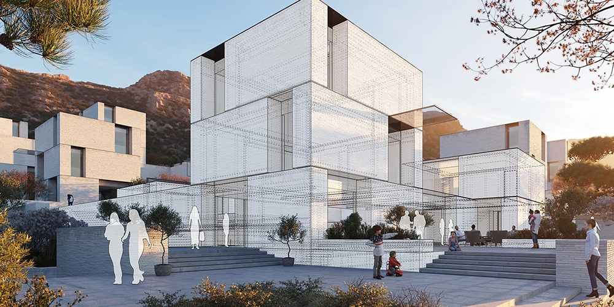
3D design turns ideas into spatial experiences: it makes abstract concepts tangible, supports informed decisions, and deepens user engagement by moving beyond flat representation.
Interactive Media: Engagement and User Control
Interactive media blends visuals, sound, and user control to create dynamic, two-way experiences. Unlike static content, interactive media responds to user actions and choices, making users active participants rather than passive observers.
Examples include interactive websites, educational simulations, gamified interfaces, touchscreen installations, and multimedia narratives. These experiences are designed around user goals and allow exploration, discovery, and feedback.
Good interactive design is grounded in clear affordances, immediate feedback, and consistent rules so users understand how to act and what to expect. Interactions should be discoverable, intuitive, and aligned with users’ mental models.
Timing and pacing are important: transitions, animations, and content reveals should feel responsive without overwhelming the user. Users should feel in control and able to pause, reverse, or undo actions where relevant.
Content structure in interactive media often uses modular patterns and branching pathways, where each choice leads to a meaningful response. Logic flows need to be tested for edge cases to avoid dead ends and user confusion.
Interactivity also supports learning and retention; people remember experiences better when they engage in hands-on tasks and receive immediate feedback. This is why interactive tutorials, quizzes, and prototypes are powerful tools in user education.
Accessibility remains critical: interactive media must include keyboard navigation, voice control options, captions, and alternatives for users with different abilities. Controls should be large enough and perform predictably.
Analytics for interactive media track user paths, engagement time, conversion points, and drop-off moments, enabling continuous optimization based on real behaviors.
Designers create interactive stories and systems using tools like HTML/CSS/JS, Unity, Unreal Engine, Adobe Animate, and specialized frameworks for AR/VR.
In UX contexts, interactive prototypes help validate concepts early. By testing interactive flows with users, teams can identify friction points and clarify expectations.
Interactive media is especially effective in branding because it can deliver memorable, immersive brand experiences that build emotional connections.
As technology evolves, interactive experiences expand into voice interfaces, gesture controls, and spatial computing, making interactivity a central part of future design strategies.

Interactive media turns viewers into participants: it combines design, technology, and storytelling to create experiences that are meaningful, memorable, and user-centered.
Environmental and Experience Design: Space, Context, and Emotion
Environmental and experience design focus on shaping physical and digital environments to deliver meaningful, engaging, and functional experiences. This includes architecture, exhibition design, retail spaces, wayfinding, public installations, and experiential marketing.
These disciplines consider how people perceive, move through, and interact with their surroundings. Designers work with lighting, materials, temperature, acoustics, spatial layout, and narrative elements to create cohesive experiences.
A strong environmental design starts with research into user behavior, context of use, and accessibility requirements. This can involve user observation studies, site analysis, and journey mapping.
In experience design, emotions and memory are prioritized: designers craft focal moments, transitions, and activities that resonate with people and support the intended purpose (e.g., learning, celebration, brand connection).
Wayfinding design is critical in large spaces such as airports, museums, schools, and hospitals. Clear signage, logical circulation paths, and visual landmarks reduce stress and improve autonomy.
Sensory design extends beyond visuals: soundscapes, scents, and tactile elements can greatly influence mood and perception. These factors should be designed intentionally rather than as afterthoughts.
In retail and exhibition environments, branding and storytelling are embedded into the spatial fabric. Graphics, product placements, and interactive stations combine to guide visitor interpretation.
Experience design also addresses sustainability and inclusivity by choosing materials and systems that minimize environmental impact and accommodate diverse needs.
Digital interfaces in physical environments—kiosks, interactive walls, mobile-guided tours—require integrated UX to bridge physical and virtual interactions.
Iterative testing is essential: prototypes, mockups, and phased rollouts let designers evaluate flow, comfort, and comprehension in real contexts.
Collaboration among architects, lighting designers, landscape planners, artists, and user researchers creates richer and more coherent environments.
With growing interest in placemaking and smart cities, environmental and experience design now tie into broader systems like mobility, public health, and community engagement.

Environmental and experience design transform spaces into stories—where every surface, route, and moment contributes to how people feel, act, and remember.
AI, VR/AR, and Immersive Technologies in the Future of Graphic Design
Today, graphic design continues to evolve with AI, VR/AR, and immersive technologies shaping its future. These technologies are redefining how designers think about creativity, interactivity, and the very nature of visual experience.
AI tools accelerate concept generation, pattern creation, and repetitive tasks. In logo design, layout exploration, or color palettes, AI algorithms can propose hundreds of variations in seconds, freeing designers for strategy and curation.
VR (virtual reality) provides fully immersive environments where users can explore 3D brand worlds, training simulations, and storytelling experiences. Designers can create spatial narratives that engage depth perception, scale, and motion in ways flat screens cannot.
AR (augmented reality) overlays digital information onto the physical world, enabling interactive packaging, product previews, wayfinding, and educational experiences. For example, retail brands use AR to let customers visualize furniture in their living rooms.
Immersive technologies demand new design considerations—interaction metaphors, gaze-based navigation, spatial audio, and haptic feedback. Usability in these environments is judged by comfort, orientation, and cognitive load.
Ethical design is essential as AI and immersive systems become more ubiquitous. Designers must ensure data privacy, avoid biased outputs, and create humane experiences that respect attention and autonomy.
Collaboration between designers, developers, XR technicians, and researchers is central in these fields. Prototypes often involve the full stack: 3D modeling, shaders, real-time engines, and interface scripts.
Motion and micro-interactions in immersive spaces are used to guide focus without causing motion sickness. Smooth transitions, contextual hints, and clear affordances help users navigate complex environments.
AI-assisted user testing can analyze gaze paths and interaction patterns in VR/AR, suggesting improvements based on real behavior data.
Immersive design also ties into storytelling and brand experiences, where older techniques like composition and visual hierarchy are adapted for spatial depth and temporal sequences.
The future of graphic design is likely to be hybrid: 2D, 3D, and sensory interfaces coexisting across screens, walls, and wearable displays, all managed through systemized design language.
Designers who master AI and immersive tools are well-positioned to create notable, accessible, and emotionally resonant experiences for the next generation of users.
<
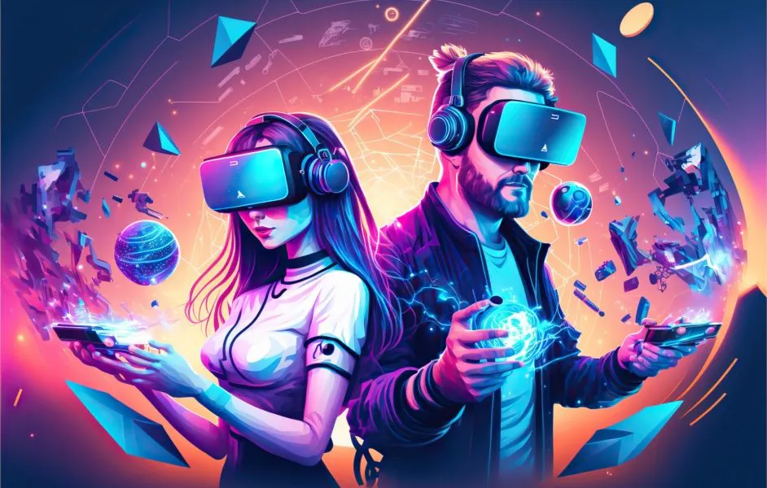
AI, VR/AR, and immersive technologies are reshaping graphic design into an experience-centric discipline that combines machine intelligence, spatial storytelling, and human empathy.